3. Výzva
Pre vytvorenie a editovanie výzvy v ISPO je potrebné, aby sme mali priradenú pracovnú pozíciou Editor výzvy, ktorá nám umožňuje vidieť sekciu Výzvy v ľavom paneli obrazovky.
3.1) Vytvorenie výzvy
Upozornenie! Podľa Metodického usmernenia č. 01/2023 v súvislosti so zavedením Informačného a monitorovacieho systému plánu obnovy (ISPO) sa v systéme uvádza len skrátené webové znenie výzvy. Plné znenie výzvy sa nahrá vo formáte PDF v sekcii Plné znenie výzvy.
3.1.1) V ľavom paneli klikneme na záložku Výzvy. Zobrazí sa zoznam výziev vytvorených pod našim orgánom (v prípade, že sme ešte nevytvorili žiadnu výzvu, zoznam bude prázdny). Klikneme na tlačidlo Pridať výzvu.
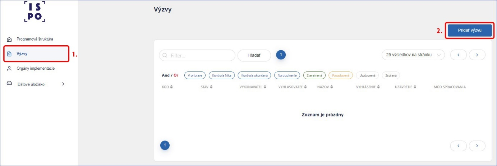
3.1.3) V prvom kroku zvolíme typ výzvy Štandardná výzva a klikneme na tlačidlo Ďalej.
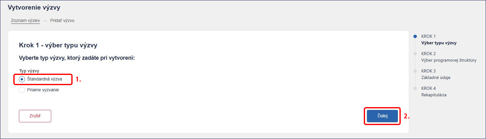
3.1.4) V druhom kroku vyberieme zo zoznamu požadovaný Komponent, Opatrenie a Vykonávateľa a klikneme na tlačidlo Ďalej.
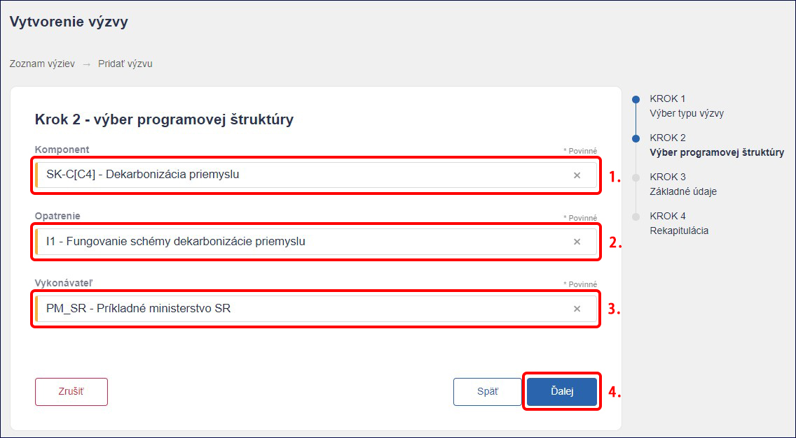
Upozornenie! Vo výbere programovej štruktúry je potrebné uviesť správny komponent a správne opatrenie, pretože tieto hodnoty po vytvorení výzvy už nie je možné zmeniť.
3.1.5) V treťom kroku systém automaticky vygeneruje kód výzvy podľa Príručky k úložisku NIKA v zložení:
Číslo komponentu -> veľké I/R -> číslo investície/reformy -> pomlčka -> číslo vykonávateľa -> pomlčka -> veľké V a poradové číslo výzvy
Príklad: 04I01-27-V01 (komponent 4, investícia 1, vykonávateľ Príkladné ministerstvo SR, výzva číslo 1)
V prípade potreby môžeme kód výzvy prepísať. Následne uvedieme Názov výzvy a klikneme na tlačidlo Ďalej.
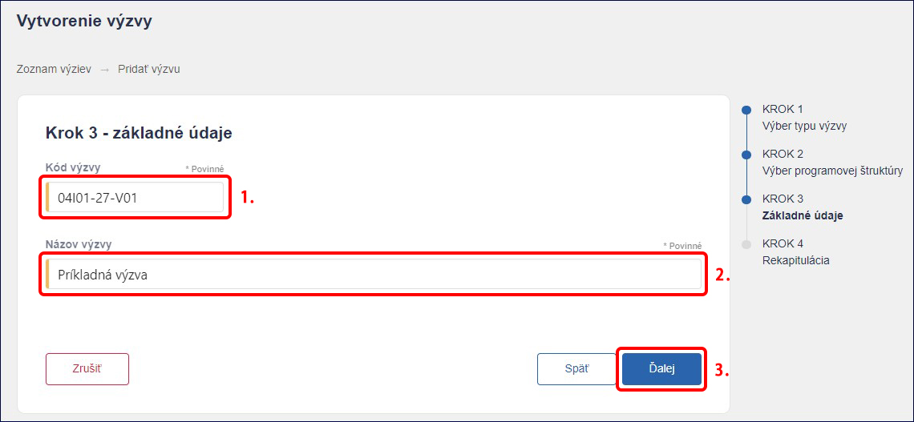
3.1.6) Štvrtý krok obsahuje zhrnutie údajov uvedených v predchádzajúcich krokoch. V prípade potreby sa môžeme vrátiť pomocou tlačidla Späť a údaje v predchádzajúcich krokoch upraviť. Pokračujeme kliknutím na tlačidlo Dokončiť.
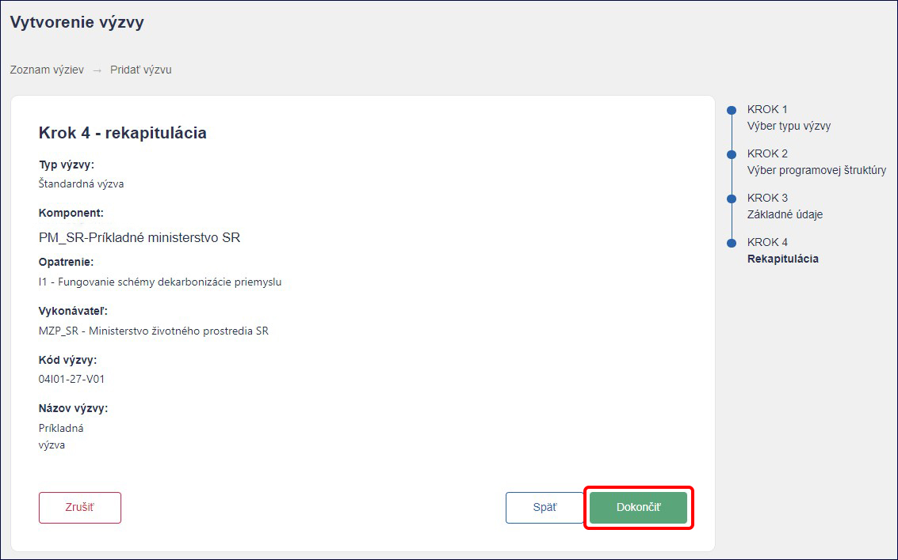
3.1.7) Takto vytvorená výzva sa objaví v zozname výziev vždy na poslednom mieste. Kliknutím na danú výzvu sa zobrazí detail výzvy, cez ktorý ju môžeme editovať.
3.2) Editácia výzvy
Detail výzvy pozostáva z jednotlivých sekcií, ako sú:
-
Domček – prehľad krokov zverejňovania výzvy
-
Príprava výzvy – editovanie znenia výzvy
-
Špecifikácia ŽoPPM – nastavenie formulára ŽoPPM
-
Stanovisko NIKA – znenie stanoviska NIKA k výzve
-
Nastavenie posudzovania – administrácia posudzovania ŽoPPM
-
Nastavenie ŽoP – povolenie podávania ŽoP vo výzve
-
Logovanie – zaznamenávanie aktivít používateľa
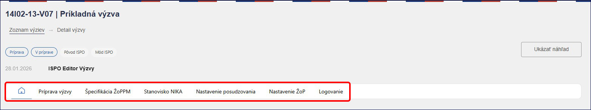
3.2.1) Ikona Domček zobrazuje kroky od vytvorenia výzvy až po uzatvorenie (krok 1 až krok 5).
V systéme máme päť krokov s menom používateľa, ktorý jednotlivé kroky vykonal.
-
Krok 1: Registrácia výzvy - výzva je v štádiu prípravy v ISPO
-
Krok 2: Kontrola NIKA - výzva bola odoslaná na kontrolu NIKA
-
Krok 3: Kontrola ukončená / Na doplnenie - NIKA odoslala stanovisko prostredníctvom ISPO
-
Krok 4: Zverejnená - výzva bola zverejnená na verejnej časti ISPO
-
Krok 5: Uzatvorená - výzva bola uzatvorená v ISPO na základe relevantnej skutočnosti
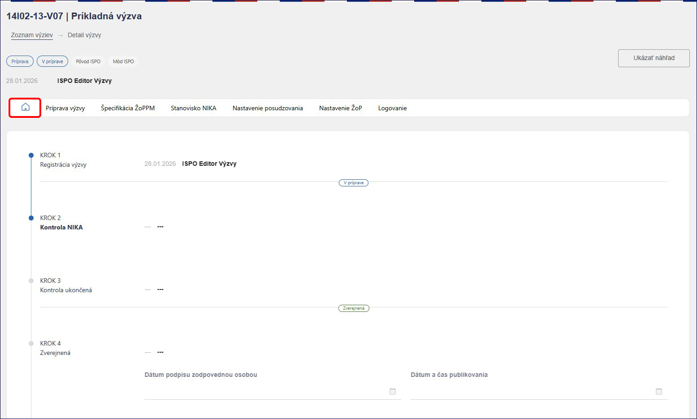
3.2.2) V záložke Príprava výzvy sa edituje znenie a obsah výzvy. Pravý panel slúži na rýchlejší prehľad jednotlivých sekcií výzvy. Ak chceme výzvu editovať, klikneme na tlačidlo Upraviť nad pravým panelom. Pre uloženie vykonaných zmien klikneme na tlačidlo Uložiť. Zmeny odporúčame ukladať priebežne.
Upozornenie! Kopírovaný text z iných dokumentov do ISPO si nezachováva formátovanie. Môže sa zmeniť číslovanie, odrážky a medzery medzi odsekmi.
Tlačidlo Ukázať náhľad nám pomáha počas celého procesu tvorenia výzvy a formulára ŽoPPM. Vďaka tomu môžeme sledovať všetky vykonané zmeny a ich zobrazenie na Portáli ISPO. Môžeme tak na výzvu a formulár ŽoPPM nahliadať ako žiadateľ a podľa toho vykonávať úpravy a zmeny. Webový odkaz na zobrazenie náhľadu je platný 10 minút. Po uplynutí tejto doby klikneme na tlačidlo Ukázať náhľad znova. Zmeny v náhľade sa prejavia až po tom ako ich na neverejnej časti ISPO uložíme.
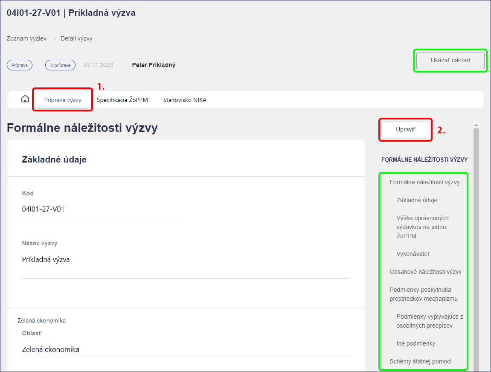
3.2.3) Sekcia Formálne náležitosti výzvy sa skladá z troch podsekcií.
Podsekcia Základné údaje obsahuje základné údaje o výzve, ktoré sú predvyplnené z predchádzajúcich krokov. Dátumy vyhlásenia, uzavretia, podávania a prijímania ŽoPPM je možné vyplniť v tejto časti, alebo si ich systém vyžiada vyplniť neskôr pri zverejňovaní výzvy.
Upozornenie! Pri dátume uzavretia výzvy sa nachádza aj čas. Ak chceme, aby sa výzva uzavrela napríklad dňa 30.11.2023, je dôležité uviesť maximálny možný čas 23:59. Ak by sme uviedli čas 00:00, výzva by sa uzavrela o polnoci predchádzajúceho dňa. Ak vykonávateľ uvedie iný čas ako 23:59, tento čas by mal uverejniť aj v plnom znení výzvy. Odporúčame vykonávateľom, aby dátum uzavretia výzvy nevychádzal na pondelok alebo piatok.
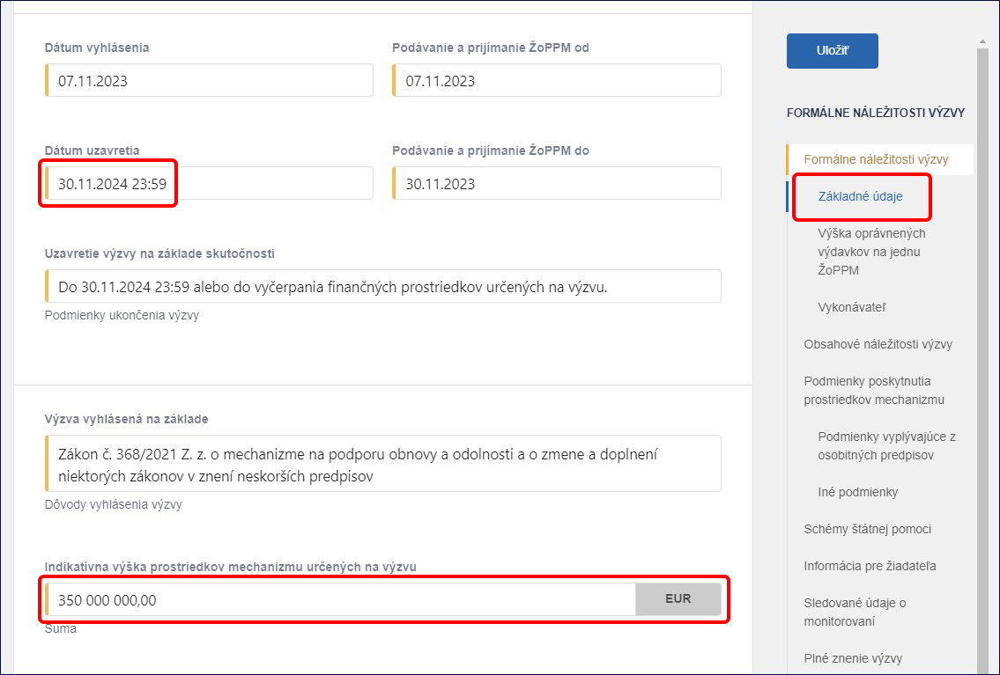
V časti Indikatívna výška oprávnených prostriedkov mechanizmu určených na výzvu uvádzame sumu bez medzier, systém medzery doplní sám.
Špecifickým prvkom pri editovaní výzvy sú tzv. Dynamické sekcie, ktoré sa nachádzajú v častiach Špecifikácia výšky prostriedkov určených na výzvu*, Špecifikácia oprávnených výdavkov a Informácia pre žiadateľa. Pomocou dynamických sekcií dokážeme vytvoriť ďalšie textové či číselné polia pre doplnenie informácií, ktoré sa v preddefinovaných poliach nenachádzajú. Pre aktivovanie dynamickej sekcie musíme kliknúť na tlačidlo *Upraviť, aktivovať prepínacie tlačidlo a kliknúť na Upraviť dynamickú sekciu.
Príklad: V časti Indikatívna výška prostriedkov mechanizmu určených na výzvu môžeme pomocou dynamickej sekcie vytvoriť nové pole na celkovú sumu s DPH.
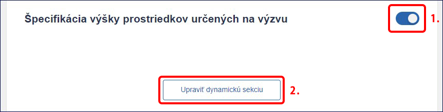
Detailný popis tvorby a fungovania dynamickej sekcie uvádzame podkapitole 3.4).
V rámci podsekcie Základné údaje môžeme tiež vyplniť cieľ výzvy, miesto a spôsob podania žiadosti o poskytnutie prostriedkov, oprávnených žiadateľov a formálne náležitosti výzvy. Ak ktorúkoľvek z preddefinovaných častí nevyplníme, nezobrazia sa ani na Portáli ISPO žiadateľom.
V podsekcii Výška oprávnených výdavkov na jednu ŽoPPM môžeme určiť minimálnu a maximálnu výšku oprávnených výdavkov, mieru spolufinancovania, prípadne textovo upresniť mieru spolufinancovania.
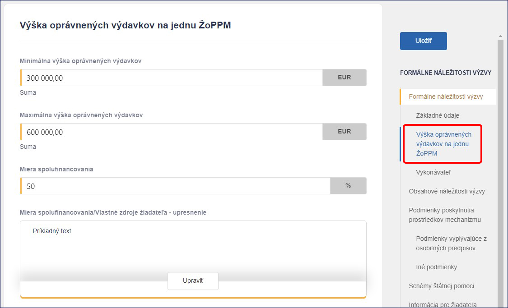
V podsekcii Vykonávateľ je pole Vykonávateľ už vyplnené na základe predchádzajúcich krokov vytvárania výzvy. Ak má výzva sprostredkovateľa, uvádzame ho v tejto časti (ak je to potrebné, môžeme vybrať viacerých sprostredkovateľov). Následne uvádzame aj vyhlasovateľa výzvy a príjemcu žiadostí.
Odporúčame vyplniť aj časť spôsob komunikácie s vykonávateľom/sprostredkovateľom. Uvádzame v nej také kontaktné údaje, na ktoré chceme prijímať prípadne otázky žiadateľov. Ak tieto kontaktné údaje neuvedieme, žiadateľ uvidí všeobecné kontaktné údaje na vykonávateľa a otázky sa nemusia dostať ku zamestnancom, ktorí sú za danú výzvu zodpovední.
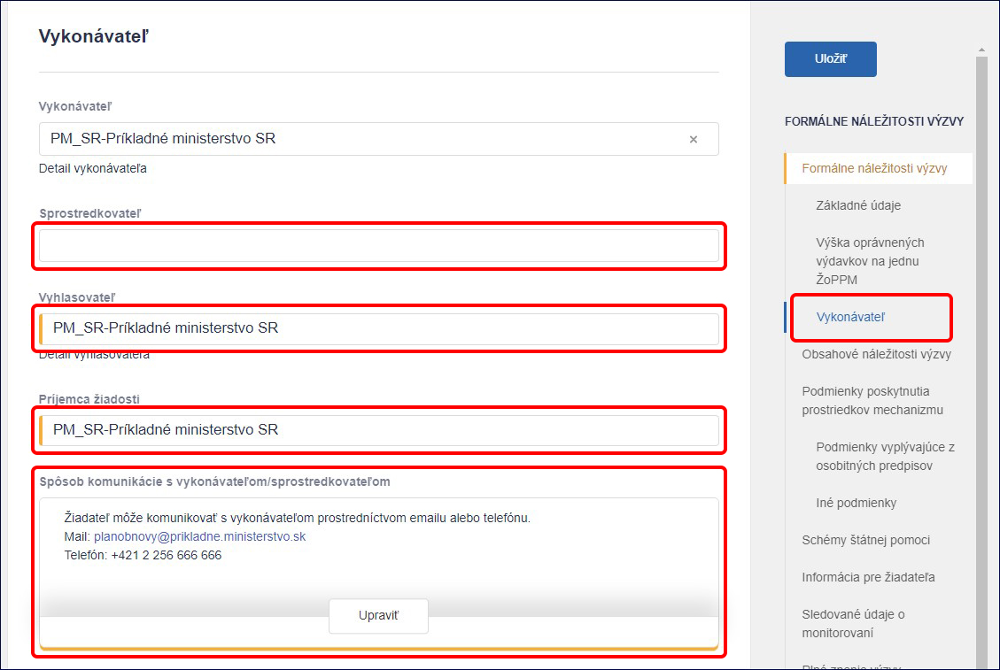
3.2.4) V sekcii Obsahové náležitosti výzvy môžeme vyplniť kritériá hodnotenia žiadostí o prostriedky mechanizmu, spôsob hodnotenia žiadostí a prípadne iné obsahové náležitosti výzvy. Pripomíname, že v tejto časti vypĺňame len skrátené webové znenie výzvy. Údaje, ktoré nevyplníme, sa na Portáli ISPO nezobrazia.
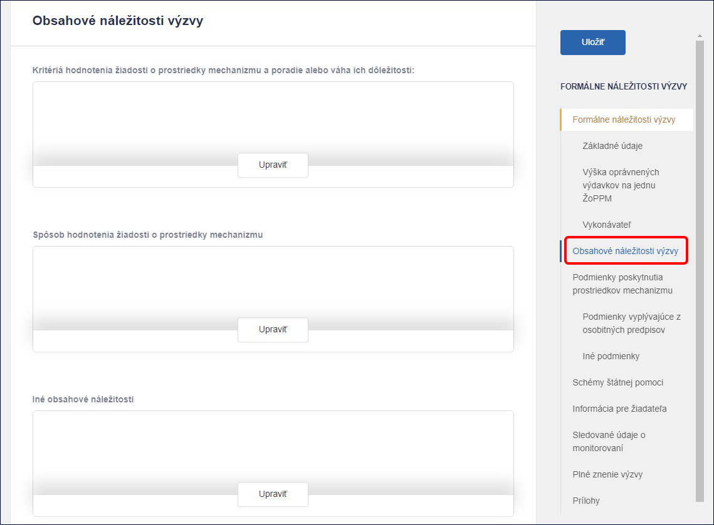
3.2.5) V sekcii Podmienky poskytnutia prostriedkov mechanizmu môžeme vyplniť podmienky oprávnenosti žiadateľa, podmienky doručenia žiadosti, podmienky týkajúce sa štátnej pomoci a vyplývajúce zo schém štátnej pomoci/pomoci de minimis a iné podmienky. Pripomíname, že v tejto časti vypĺňame len skrátené webové znenie výzvy. Údaje, ktoré nevyplníme, sa na Portáli ISPO nezobrazia.
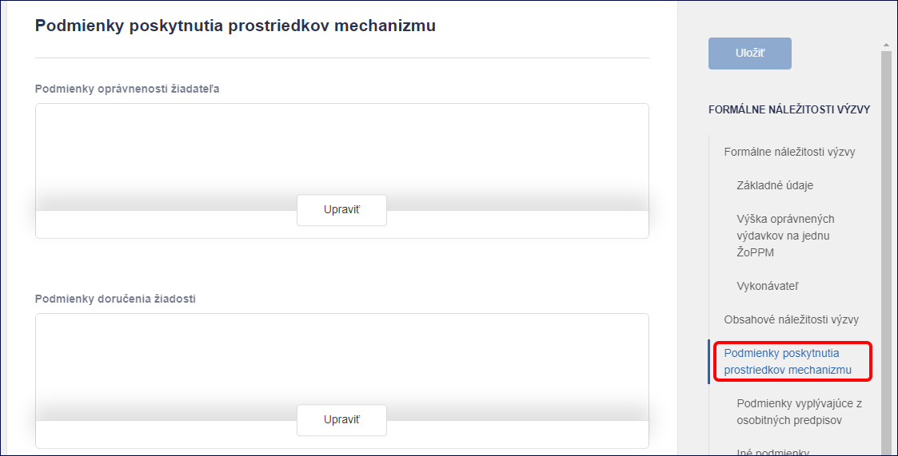
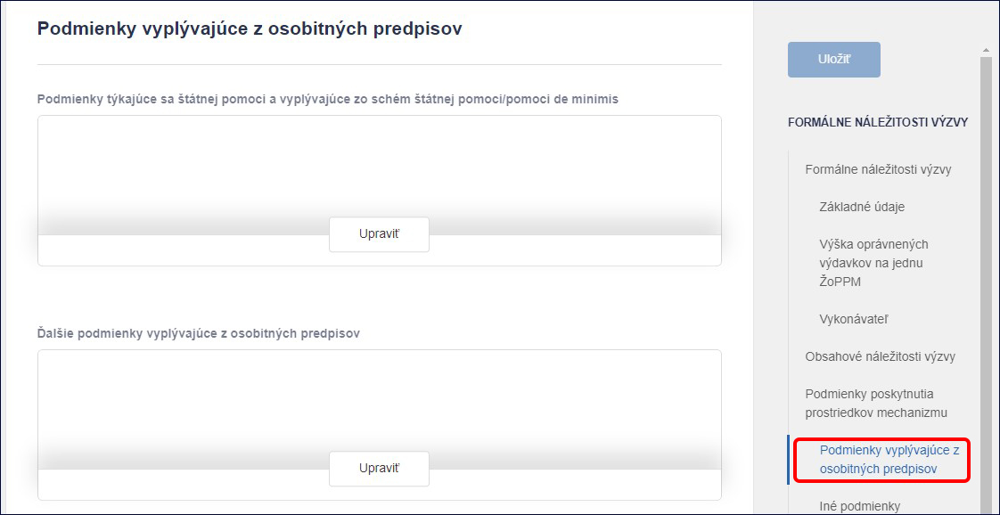
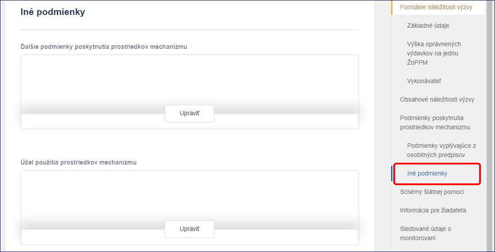
3.2.6) V prípade, že by výzva mala obsahovať schému štátnej pomoci, aktivujeme sekciu Schémy štátnej pomoci cez prepínacie tlačidlo. Následne môžeme upraviť nadpis sekcie, úvodný text a môžeme vyhľadať relevantnú schému zo zoznamu, ktorú následne pridáme.
Poznámka*: Aktivovanie sekcie Schémy štátnej pomoci* znamená, že sa táto sekcia zároveň zobrazí vo formulári ŽoPPM. Ak bude sekcia aktivovaná, ale nebude v nej priradená žiadna schéma, tento krok vo formulári ŽoPPM bude irelevantný a nebude mať pre žiadateľa význam.
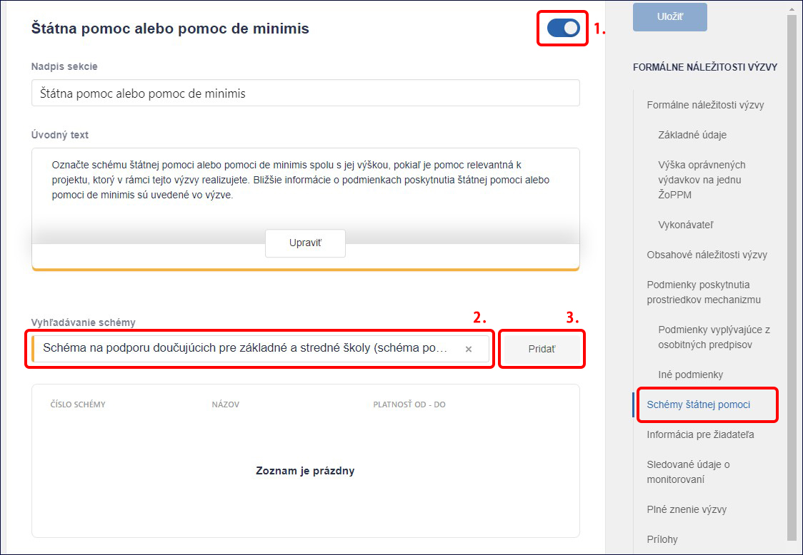
Ak pridaná schéma štátnej pomoci nie je správna alebo ju chceme odstrániť, môžeme tak urobiť pomocou tlačidla Tri bodky a možnosť Odstrániť.
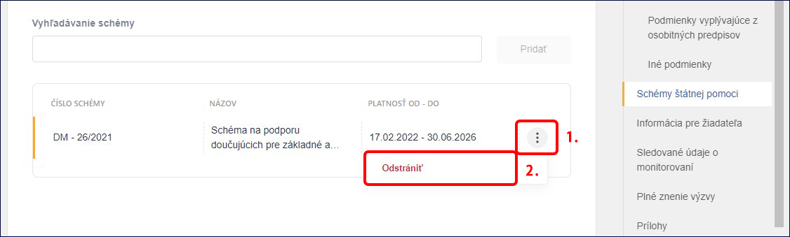
3.2.7) Sekcia Informácie pre žiadateľa slúži na doplnenie ďalších informácií, ktoré nie sú preddefinované systémom.
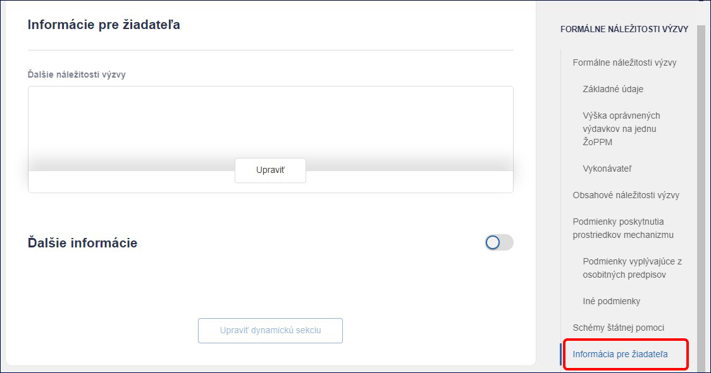
3.2.8) V sekcii Sledované údaje o monitorovaní môžeme v prípade vykazovania ukazovateľov Európskej komisii vybrať preddefinované ukazovatele alebo môžeme vytvoriť vlastné ukazovatele podľa potreby. Po aktivácii sekcie pomocou prepínacieho tlačidla vieme upraviť nadpis sekcie a úvodný text.
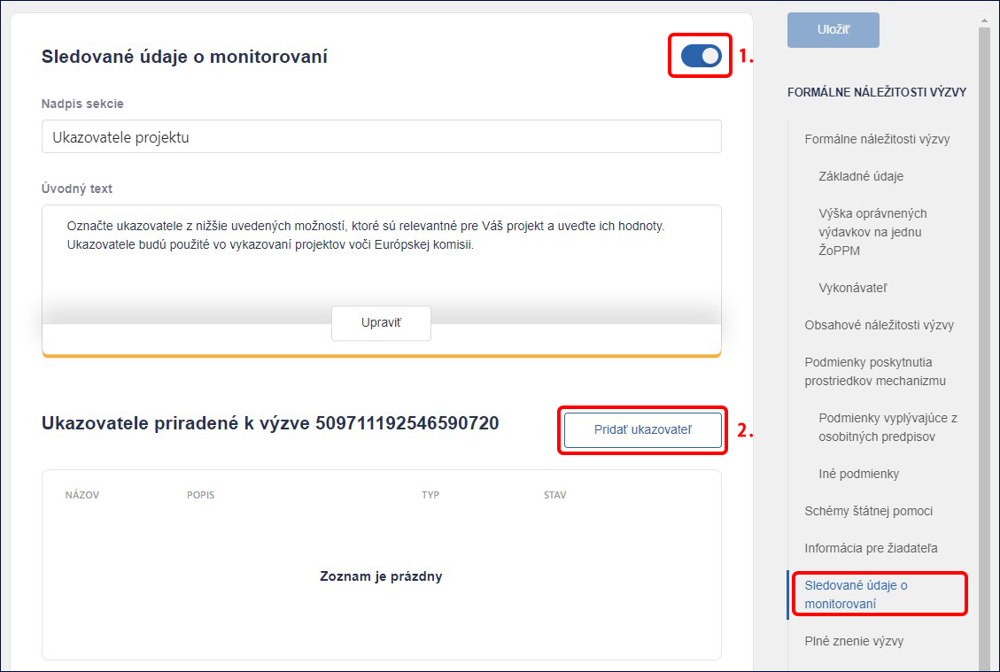
Upozornenie! Ak sme pred kliknutím na tlačidlo Pridať ukazovateľ vykonali nejaké zmeny, po kliknutí naň nás systém upozorní, aby sme vykonané zmeny uložili. Klikneme na tlačidlo Zostať, následne vpravo hore na tlačidlo Uložiť a Upraviť a až potom znova na tlačidlo Pridať ukazovateľ. Ak tak nespravíme, môžeme prísť o neuložené zmeny.
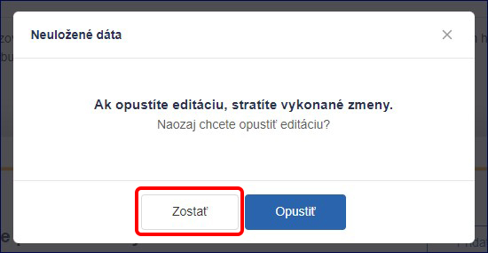
Po kliknutí na tlačidlo Pridať ukazovateľ systém ponúkne možnosť Pridať ukazovateľ z katalógu alebo Vytvoriť nový ukazovateľ.
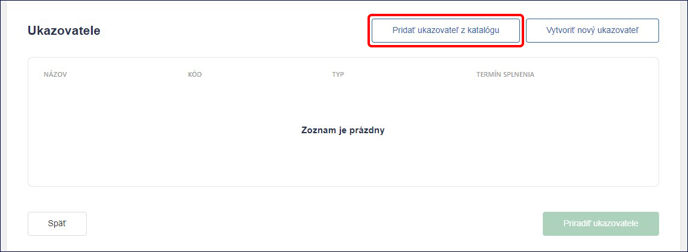
Ak klikneme na výber ukazovateľa z katalógu, pomocou filtra môžeme vyhľadať ukazovateľ podľa názvu alebo ho hľadať v zozname všetkých ukazovateľov. Ak nájdeme hľadaný ukazovateľ, klikneme na zaškrtávacie políčko. Naraz môžeme pridať viac ukazovateľov. Potom klikneme na tlačidlo Pridať označené.
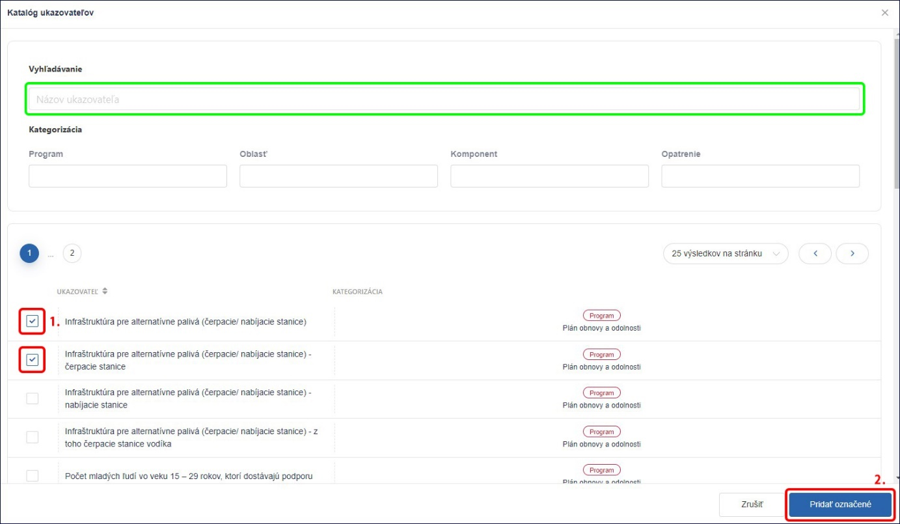
Ak klikneme na vytvorenie vlastného ukazovateľa, musíme vyplniť kód (určíme ho sami), názov, popis, zvolíme typ ukazovateľa, vyberieme mernú jednotku a typ agregácie a klikneme na tlačidlo Vytvoriť.
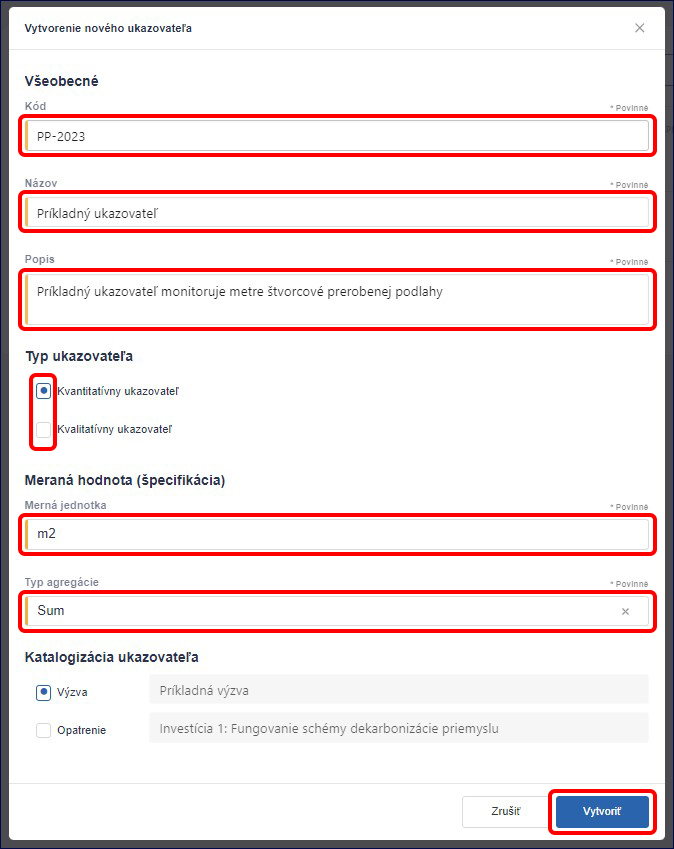
Výber zvolených ukazovateľov potvrdíme kliknutím na tlačidlo Priradiť ukazovatele.
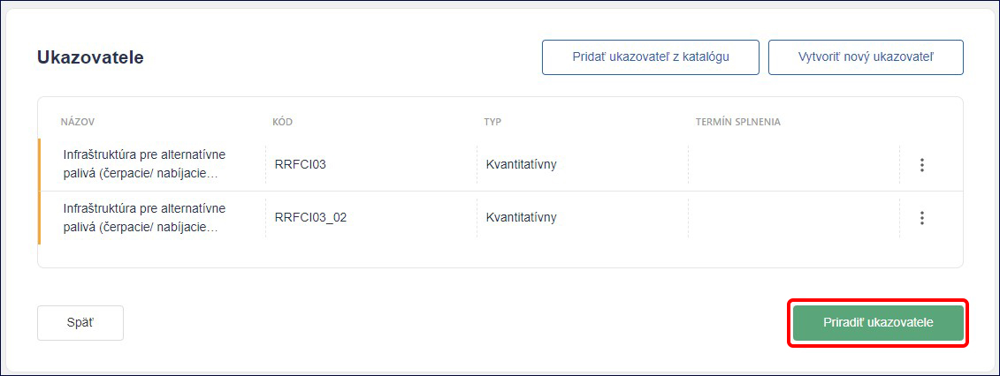
Ak sa rozhodneme ukazovateľ upraviť alebo zneplatniť, klikneme na tlačidlo Tri bodky a vyberieme možnosť.
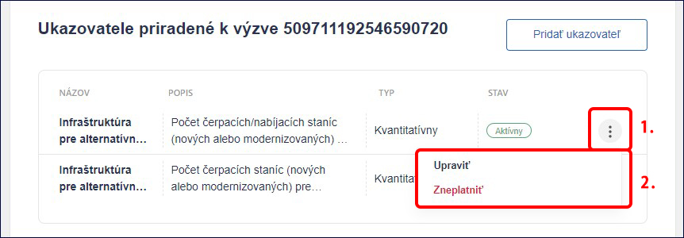
Poznámka:* Aktivácia sekcie údajov o monitorovaní* znamená, že sa táto sekcia zároveň zobrazí vo formulári ŽoPPM. Ak bude sekcia aktivovaná, ale nebude v nej priradený žiaden ukazovateľ, tento krok vo formulári ŽoPPM bude irelevantný a nebude mať pre žiadateľa žiadny význam.
Náhľad kroku Ukazovatele projektu na Portáli ISPO.
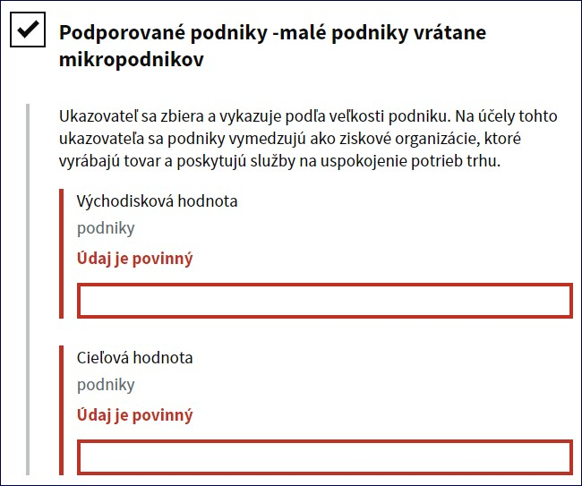
-
Žiadateľ môže začiarknuť ukazovateľ, ku ktorému sa chce vyjadriť.
-
Ak žiadateľ zaklikne ukazovateľ, musí k nemu uviesť aj hodnoty.
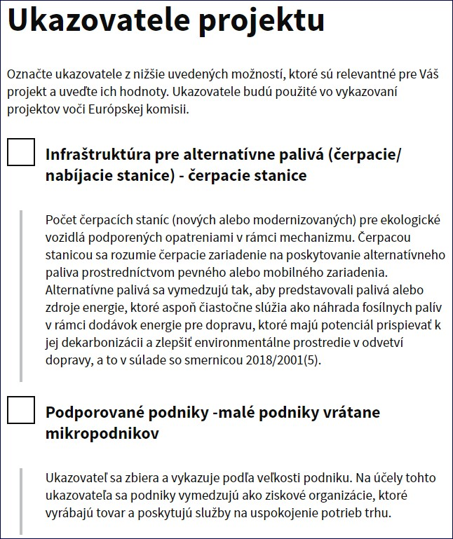
3.2.9) Pripomíname, že v systéme ISPO sa uvádza len skrátené webové znenie výzvy. Plné znenie výzvy odsúhlasené Národnou implementačnou a koordinačnou agentúrou sa nahráva vo formáte PDF v sekcii Plné znenie výzvy. Uvedieme názov výzvy (v prípade potreby aj poznámku) a klikneme na tlačidlo Pridať prílohu.
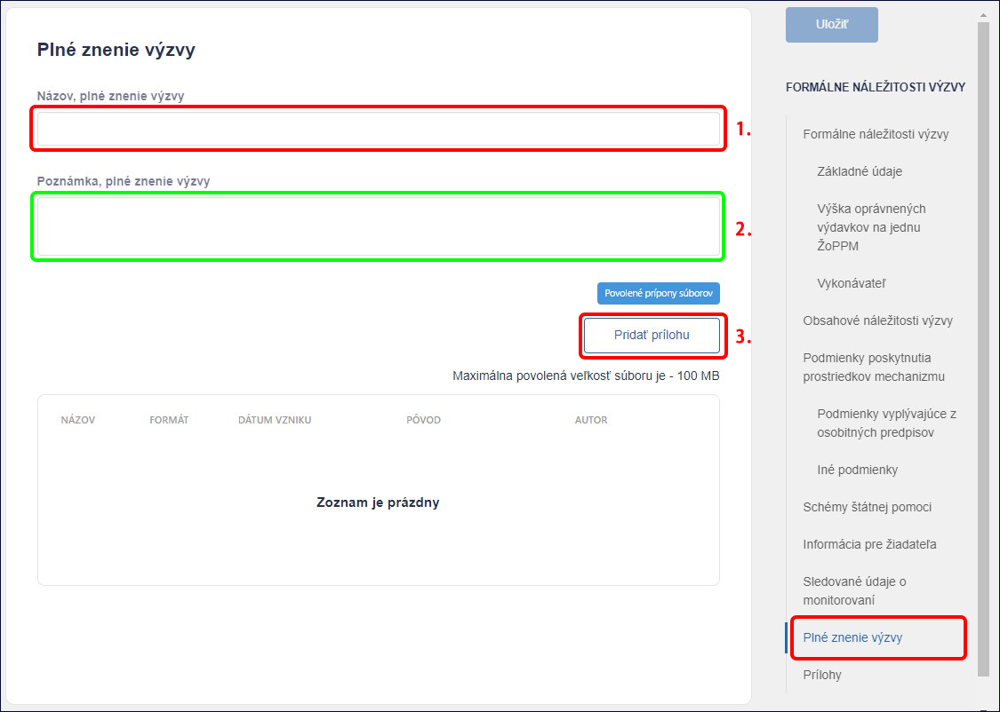
Nahratý dokument sa zobrazí v zozname príloh. Prílohu vieme vymazať alebo stiahnuť cez tlačidlo Tri bodky. V prípade, že po vyhlásení výzvy dôjde k zmene plného znenia výzvy, v tejto sekcii ponecháme dokument s pôvodným znením výzvy a k nemu nahráme dokument s novým znením.
Upozornenie! V náhľade výzvy sa na Portáli ISPO napriek tomu, že sme prílohu nahrali, zobrazí v sekcii Plné znenie výzvy fráza „bez dokumentu“. Nejde o chybu, je to len náhľad, a po zverejnení výzvy sa tento dokument zobrazí.
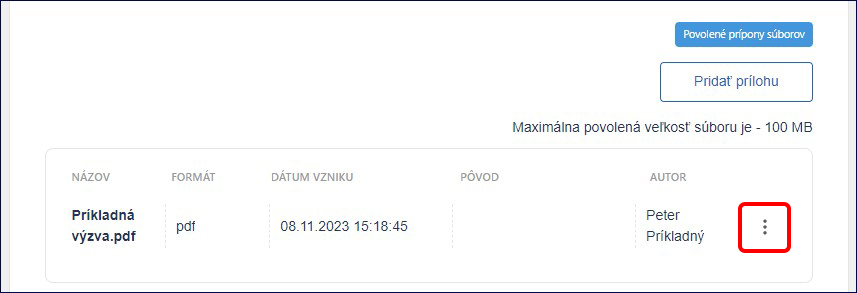
3.2.10) V sekcii Prílohy nahrávame prílohy výzvy a prílohy ŽoPPM, ktoré si žiadateľ stiahne, vyplní a nahrá v relevantnom kroku formulára ŽoPPM. Klikneme na tlačidlo Pridať prílohu.
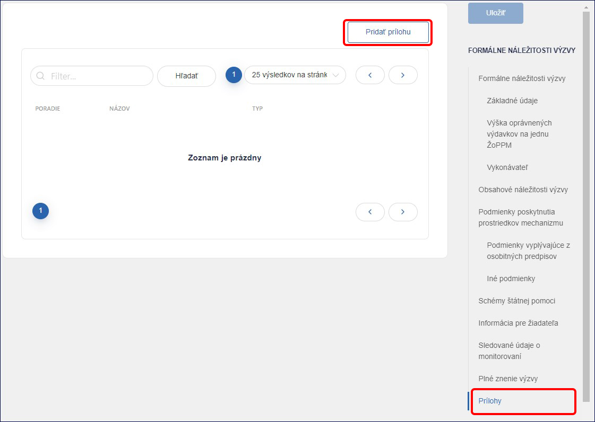
Vytvoríme priečinok s názvom Prílohy výzvy a poznámkou a klikneme na tlačidlo Dokončiť.
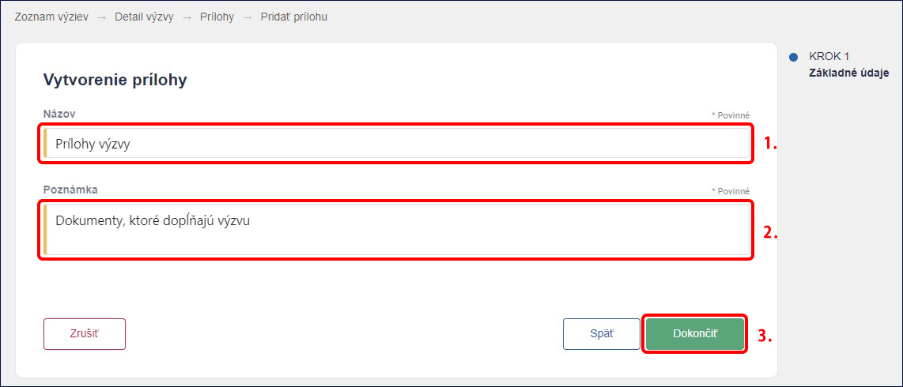
Následne sa dostaneme do vytvoreného priečinka, do ktorého nahráme jednotlivé dokumenty. Klikneme na tlačidlo Pridať dokument.
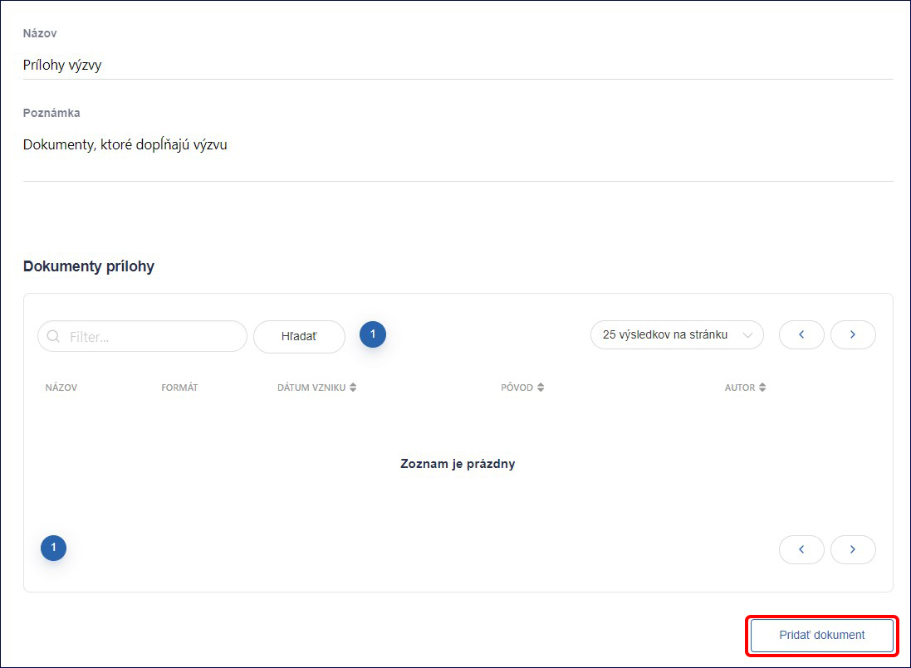
Zobrazí sa možnosť pre vloženie dokumentu. Klikneme na tlačidlo Vložte súbor alebo presunieme súbor z nášho počítača do sivého poľa.
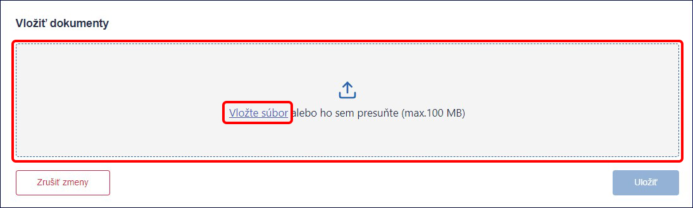
Upozornenie! Nahrávané súbory majú povolenú maximálnu kapacitu 100MB. V ich názve nesmie byť bodka ani iné špecifické znaky. Medzery medzi slovami v názve dokumentu odporúčame vyplniť pomlčkou alebo podtržníkom. Niektoré súbory systém neakceptuje, pretože ich koncovka sa uložila veľkými písmenami, ako napr. DOCX., PDF. V takom prípade je potrebné tieto súbory premenovať cez Prieskumník počítača -> v hornom paneli Zobraziť -> Prípony názvov súborov -> a prepísať názov konkrétneho súboru z DOCX na docx.
Ak je nahraná príloha v poriadku, môžeme prepísať jej názov a klikneme na tlačidlo Uložiť.
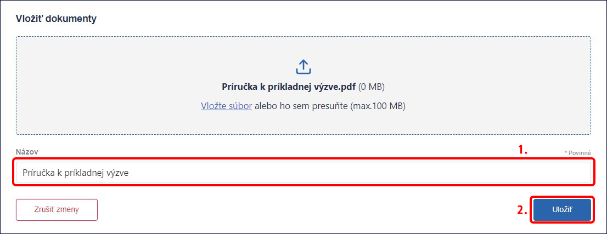
Následne môžeme urobiť niekoľko krokov. Môžeme pridať ďalší dokument do priečinka, alebo pomocou tlačidla Tri bodky môžeme nahratý dokument odstrániť. Kliknutím na tlačidlo Prílohy sa môžeme vrátiť do zoznamu priečinkov.
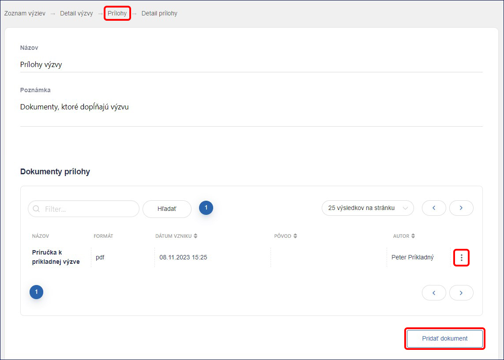
Upozornenie! Nahrávané súbory sa zoradia v poradí, v akom ich nahráme. Ich poradie nie je možné meniť.
Odporúčame vytvárať dva priečinky:
-
priečinok s názvom Prílohy výzvy, do ktorého sa nahrajú dokumenty patriace k výzve
-
priečinok s názvom Prílohy ŽoPPM, do ktorého sa nahrajú dokumenty,vzory/formuláre, ktoré si bude môcť žiadateľ stiahnuť, vyplniť a neskôr priložiť k žiadosti.
Upozornenie! Prílohy, ktoré chceme, aby žiadateľ priložil k ŽoPPM, definujeme až v časti Špecifikácia ŽoPPM. Napriek tomu dokumenty ako vzory či formuláre nahráme do príloh v časti Príprava výzvy.
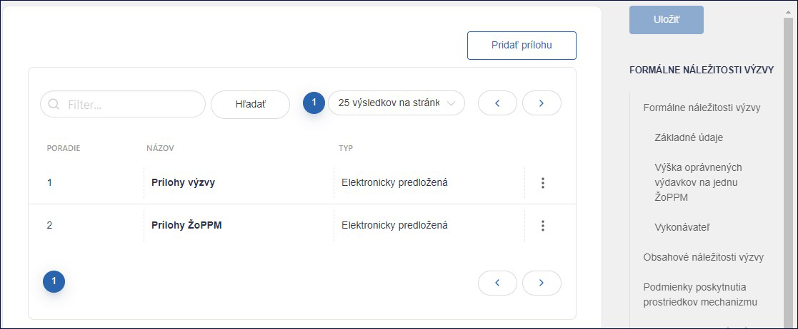
3.3) Špecifikácia formulára ŽoPPM
Záložka Špecifikácia ŽoPPM slúži na editáciu a nastavenie formulára ŽoPPM, ktorý bude žiadateľ vypĺňať prostredníctvom Portálu ISPO. Formulár ŽoPPM je flexibilný a skladá sa z jednotlivých krokov, ktoré môžeme nadefinovať.
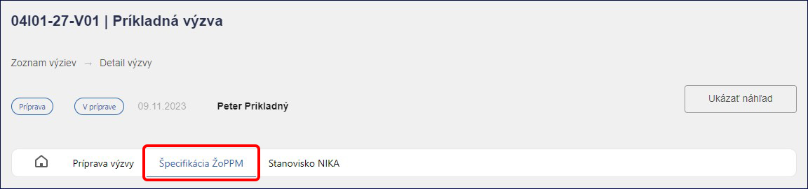
V časti Špecifikácia ŽoPPM z pravého navigačného panela sú automaticky aktivované tieto sekcie:
-
Údaje o projekte – odporúčame ponechať vždy aktivované
-
Zdroje financovania – odporúčame ponechať aktivované ak relevantné
-
Prílohy ŽoPPM – ponechať vždy aktivované
-
Možnosti rozpočtu – ponechať vždy aktivované
-
Čestné vyhlásenie – ponechať vždy aktivované
-
Aktivity projektu – odporúčame ponechať aktivované ak relevantné
-
Miesto realizácie – odporúčame ponechať aktivované ak relevantné
-
Identifikácia žiadateľa – ponechať vždy aktivované
-
Vzor žiadosti – ponechať vždy aktivovanú aspoň jednu možnosť
Poznámka: Zobrazenie alebo nezobrazenie sekcií vo formulári ŽoPPM na Portáli ISPO (ktorý vypĺňa žiadateľ) závisí od ich aktivácie alebo deaktivácie vykonávateľom v špecifikácii formulára ŽoPPM. Aktivovaná sekcia v neverejnej časti ISPO teda znamená jeden krok formulára ŽoPPM na Portáli ISPO.
Pripomíname tiež dôležitosť tlačidla Ukázať náhľad, ktoré nám pomáha počas celého procesu tvorenia formulára ŽoPPM, kedy môžeme všetky aktivované sekcie a podsekcie, pridané texty a vykonané zmeny vidieť ako náhľad na Portáli ISPO. Po kliknutí na tlačidlo Ukázať náhľad nám internetový prehliadač otvorí novú záložku. V nej uvidíme celú výzvu, ako sme ju vytvorili v predošlých krokoch. Aby sa nám zobrazil náhľad formulára ŽoPPM, klikneme na Pozrieť si vzor žiadosti (fyzická/právnická osoba) priamo pod názvom výzvy.
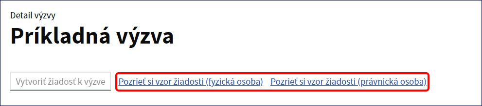
Na nasledujúcej strane, ktorá obsahuje všeobecné pokyny k ŽoPPM, sa presunieme na dolnú časť obrazovky, kde klikneme na zelené tlačidlo Prejsť na vzor žiadosti. Následne sa nám zobrazia jednotlivé kroky formulára ŽoPPM, ktoré sme aktivovali na neverejnej časti ISPO.
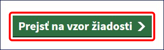
3.3.1) Sekcia Údaje o projekte je automaticky aktivovaná. Na Portáli ISPO sa zobrazia povinné polia Názov projektu, Krátky názov projektu, Cieľ projektu a Popis projektu. Odporúčame ponechať túto sekciu aktivovanú. Údaje z nej sa dotiahnu do úplnej žiadosti, ako aj do Sumára žiadosti PDF, ktorý žiadatelia po vyplnení žiadosti podpisujú. Zároveň sa tieto údaje zbierajú do monitorovacích údajov a databázy ISPO.
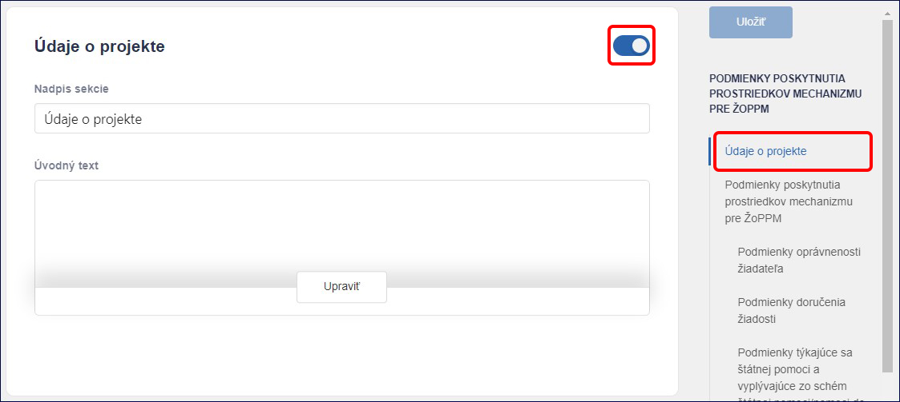
Poznámka*: V každej sekcii a podsekcii v časti Špecifikácia ŽoPPM* môžeme meniť nadpis sekcie a úvodný text, v ktorom môžeme bližšie špecifikovať, čo má žiadateľ v jednotlivých poliach uviesť.
Ak preddefinované údaje o projekte nepostačujú, môžeme aktivovať prepínacie tlačidlo v podsekcii Ďalšie údaje o projekte a sprístupniť dynamickú sekciu, pomocou ktorej môžeme pridať ďalšie polia. Vzorovo sme doplnili polia ako Akronym projektu a Anglický názov projektu. Detailný popis editácie a fungovania dynamickej sekcie opisujeme v podkapitole 3.4).
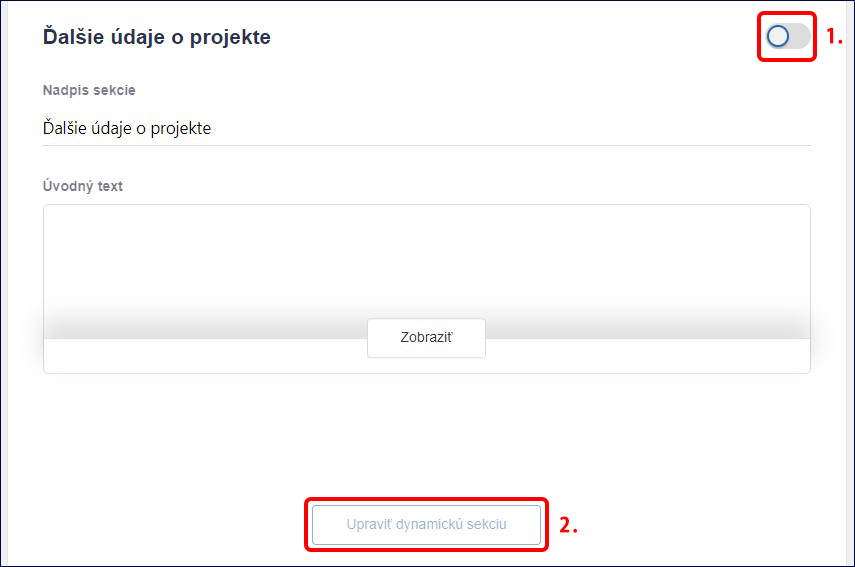
Náhľad kroku Údaje o projekte a Ďalšie údaje o projekte na Portáli ISPO.
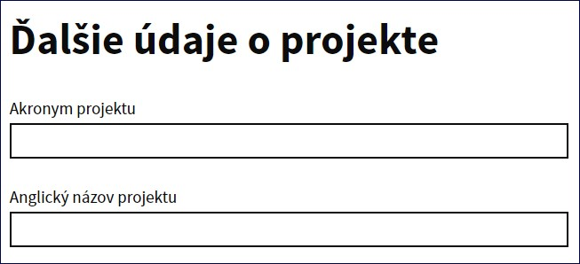
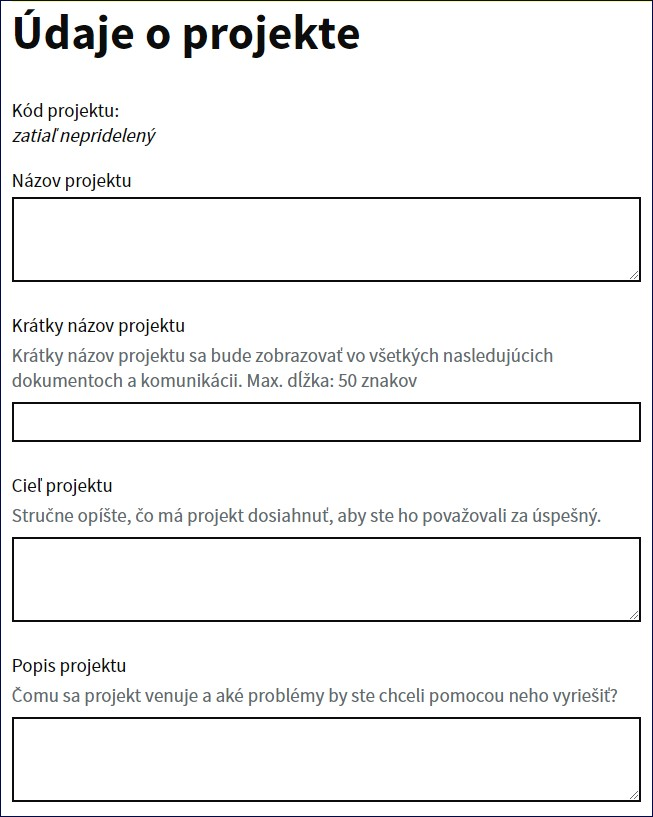
3.3.2) Sekcia Podmienky poskytnutia prostriedkov mechanizmu pre ŽoPPM je automaticky vypnutá a v prípade potreby ju aktivujeme. Môžeme zmeniť nadpis a upraviť úvodný text. Táto sekcia obsahuje viacero podsekcií, ktoré môžeme aktivovať (napríklad podmienky oprávnenosti, podmienky doručenia žiadosti, podmienky týkajúce sa štátnej pomoci a podobne).
Poznámka:* Nasledujúce nastavenie podmienok odporúčame len v prípade jednoduchých podmienok. V prípade zložitejších podmienok môžeme túto sekciu preskočiť a prílohy, ktoré by mal žiadateľ predložiť na preukázanie splnenia podmienok, preddefinujeme v sekcii Prílohy ŽoPPM.***
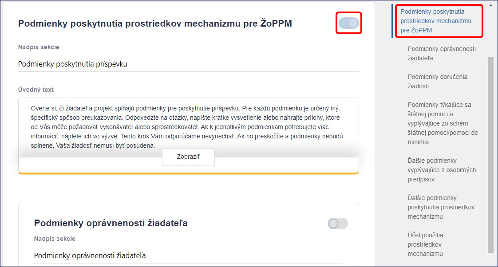
Rozdiel medzi sekciou podmienok v príprave výzvy a sekciou podmienok v špecifikácii ŽoPPM spočíva v tom, že pri príprave výzvy slovne popisujeme podmienky tak, ako ich stanovuje výzva. Pri špecifikácii ŽoPPM uvádzame podmienky s cieľom získať odpovede/akcie od žiadateľa.
Príklad: Jednou z podmienok oprávnenosti žiadateľa je, že žiadateľom môže byť právnická osoba zapísaná v Obchodnom registri Slovenskej republiky. V záložke Príprava výzvy túto podmienku slovne popíšeme. V záložke Špecifikácia ŽoPPM využijeme tzv. štruktúrovanú podmienku, ktorou vytvoríme v žiadosti priestor pre žiadateľa, aby sa k danej podmienke vyjadril.
Nastavenie podmienok oprávnenosti nastavíme podľa príkladu nasledovne. Najskôr pomocou prepínacieho tlačidla aktivujeme sekciu Podmienky oprávnenosti žiadateľa, následne klikneme na tlačidlo Pridať podmienku.
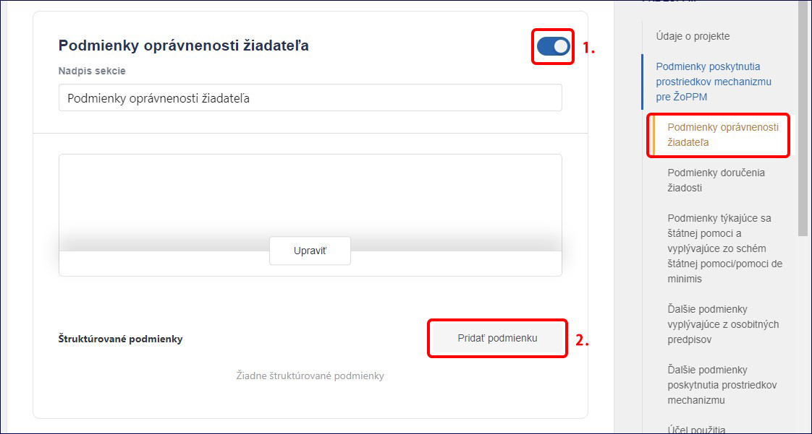
Uvedieme príkladnú podmienku oprávnenosti, v ktorej žiadateľom môže byť len právnická osoba a ako spôsob preukázania splnenia podmienky uvedieme predloženie aktuálneho výpisu z OR SR.
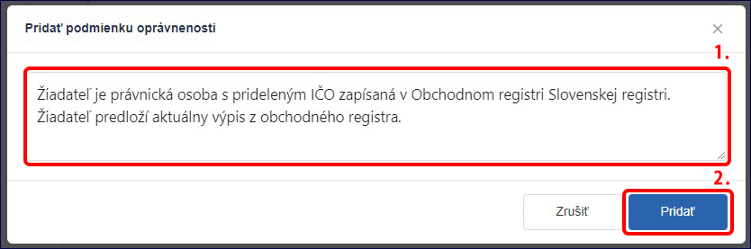
Takto vytvorená štruktúrovaná podmienka sa zobrazí v zozname pod číslom 1. Túto podmienku môžeme pomocou tlačidla Tri bodky odstrániť, alebo môžeme pridať ďalšiu podmienku.
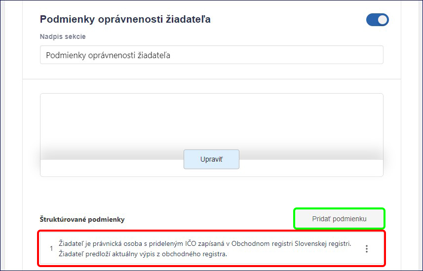
Náhľad kroku Podmienky poskytnutia prostriedkov mechanizmu pre ŽoPPM a Podmienky oprávnenosti žiadateľa na Portáli ISPO.
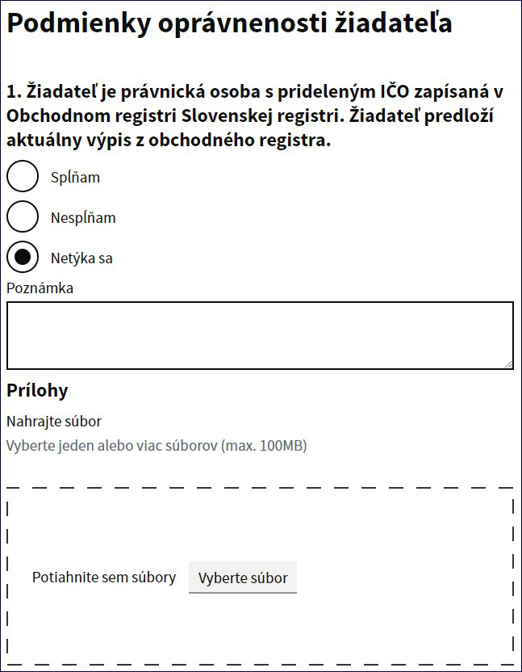
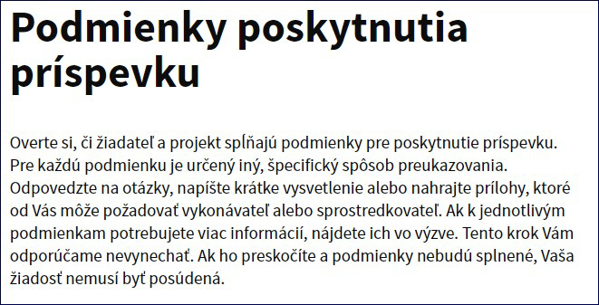
-
Žiadateľ môže reagovať vybraním jednej z možností spĺňam, nespĺňam, netýka sa.
-
Môže uviesť svoje vyjadrenie k podmienke v poznámke.
-
Môže predložiť dokument nahratím prílohy.
-
Žiadateľ môže reagovať vybraním jednej z možností spĺňam, nespĺňam, netýka sa.
-
Môže uviesť svoje vyjadrenie k podmienke v poznámke.
-
Môže predložiť dokument nahratím prílohy.
3.3.3) Sekcia Bodové kritériá môže slúžiť na subjektívne ohodnotenie žiadateľa samým sebou, prípadne zadanie ľubovoľných kvantitatívnych parametrov projektu zo strany žiadateľa, ak to výzva predpokladá.
Ak sa nám táto sekcia hodí, aktivujeme prepínacie tlačidlo. Môžeme upraviť nadpis aj text. Následne klikneme na tlačidlo Pridať kritérium.
Vyplníme názov a popis daného kritéria, uvedieme maximálny počet bodov, ktoré si žiadateľ môže za dané kritérium priradiť a pomocou prepínacieho tlačidla aktivujeme Vypĺňa žiadateľ. Ak tlačidlo Vypĺňa žiadateľ neaktivujeme, žiadateľ nebude môcť na Portáli ISPO vyplniť pole s hodnotou. Klikneme na tlačidlo Uložiť.
Toto kritérium sa nám zobrazí v zozname. Kliknutím na tlačidlo Pridať kritérium môžeme pridať ďalšie kritérium. Pomocou tlačidla Tri bodky môžeme kritérium odstrániť.
Náhľad kroku Bodové kritériá na Portáli ISPO.
-
Žiadateľ môže uviesť počet bodov od 0 do 10, podľa toho, koľko sme nastavili
-
Môže uviesť text do poznámky.
3.3.4) Sekciu Iné formálne náležitosti žiadosti môžeme využiť v prípade, ak potrebujeme doplniť ďalšie náležitosti, ktoré sa nehodili do žiadnej z predchádzajúcich sekcií. V tejto sekcii je možné využiť dynamickú sekciu.
3.3.5) Sekciu Doplňujúce údaje rozpočtu a finančného plánu môžeme využiť v prípade, ak potrebujeme\ od žiadateľa doplniť ďalšie náležitosti rozpočtu, ktoré nebolo možné vyplniť v rámci sekcie Možnosti rozpočtu v bode 3.4.9). V tejto sekcii je možné využiť dynamickú sekciu.
3.3.6) Sekciu Ďalšie údaje žiadosti môžeme využiť v prípade, ak potrebujeme doplniť ďalšie náležitosti, ktoré sa nehodili do žiadnej z predchádzajúcich sekcií. V tejto sekcii je možné využiť dynamickú sekciu.
3.3.7) Sekciu Zdroje financovania odporúčame ponechať aktivovanú. Aby bol tento krok relevantný, je potrebné ponechať aktivovanú aj niektorú z ďalších podsekcií.
Ak chceme, aby si žiadateľ vybral spôsob financovania, ponecháme aktivovanú podsekciu Zdroje financovania – spôsob. Žiadateľ si tak bude môcť vybrať z možností systém predfinancovania, systém zálohových platieb, systém refundácie.
Ak chceme, aby žiadateľ uviedol, či poberá alebo poberal pomoc z iných zdrojov, ponecháme aktivovanú podsekciu Zdroje financovania – iná pomoc. Žiadateľ si tak bude môcť vybrať z možností áno/nie. Ak zvolí možnosť áno, vo formulári sa mu objavia ďalšie kolónky na vyplnenie ako Poskytovateľ pomoci, Názov pomoci, Rok schválenia pomoci, Číslo zmluvy, Webová stránka poskytovateľa (link z CRZ, Suma v EUR a Čestné vyhlásenie, že vyššie uvedená pomoc nie je súčasťou žiadnej sumy v žiadosti. V prípade, že poberá pomoc z viacerých zdrojov, môže kliknúť na Pridať novú položku a opäť uviesť všetky informácie o tejto pomoci.
Odporúčanie: Sekciu Zdroje financovania - iná pomoc odporúčame aktivovať pre účely jednoduchšieho posúdenia rizika dvojitého financovania.
V prípade, že sme v časti Príprava výzvy aktivovali sekciu Schémy štátnej pomoci a vybrali sme konkrétnu schému štátnej pomoci zo zoznamu, v kroku Zdroje financovania sa žiadateľovi objaví aj kolónka Štátna pomoc alebo pomoc de minimis s otázkou „Predstavujú prostriedky mechanizmu štátnu pomoc alebo pomoc de minimis?“ Žiadateľ si tak bude môcť vybrať z možností áno predstavujú / nie nepredstavujú. Ak zvolí možnosť áno predstavujú, vo formulári sa mu objaví Výber názvu a čísla schémy, kde zaškrtne nami vybranú schému a uvedie Celkovú výšku štátnej pomoci.
Upozornenie: Sekciu Schémy štátnej pomoci sme aktivovali v časti Príprava výzvy, nie v časti Špecifikácia ŽoPPM. Napriek tomu sa objaví vo formulári ŽoPPM v kroku Zdroje financovania**
Náhľad kroku Zdroje financovania na Portáli ISPO.
-
Žiadateľ vyberie z možností áno/nie.
-
Ak vyberie áno, označí nami preddefinovanú schému štátnej pomoci a uvedie Celkovú výšku štátnej pomoci
- Žiadateľ vyberie z možností: systém predfinancovania, systém zálohových platieb, systém refundácie
-
Žiadateľ vyberie z možností áno/nie.
-
Ak vyberie áno, uvedie poskytovateľa pomoci, názov pomoci, rok schválenia pomoci, číslo zmluvy, webovú stránku poskytovateľa, sumu v eurách a začiarkne čestné vyhlásenie
3.3.8) Sekciu Prílohy ŽoPPM ponecháme aktivovanú, ak chceme od žiadateľa aby priložil ku žiadosti prílohy. V tejto sekcii nenahrávame žiadne dokumenty, ale nadefinujeme aké dokumenty má žiadateľ nahrať. V úvodnom texte môžeme žiadateľovi bližšie popísať, čo od neho požadujeme a klikneme na tlačidlo Pridať prílohu.
Vyplníme povinné údaje, ako Názov, Číslo a Spôsob predloženia. Údaje ako Odporúčaný formát a Požadovaná originalita dokumentov nemusíme vypĺňať, pretože aktuálne nastavenie ISPO ich nikde nezobrazí. Ak chceme žiadateľovi bližšie špecifikovať konkrétnu prílohu, môžeme mu uviesť Popis.
Takto nadefinovanú prílohu uvidíme v zozname.
V kroku Prílohy formulára ŽoPPM na Portáli ISPO sa žiadateľovi zobrazí zoznam príloh v poradí, ako sme ich nadefinovali. Žiadateľ môže zaškrtnúť políčko, či už prílohu nahral v predchádzajúcich krokoch formulára, alebo ju zašle listinne. Ak toto políčko nezaškrtne, zostane mu možnosť nahrať súbor. Žiadateľ môže nahrávať rôzne typy súborov ako jpg, png, docs, xlsx, mp3, mp4, zip, rar,... Maximálna veľkosť jedného súboru, ktorý žiadateľ môže nahrať je 100MB.
Poznámka: Elektronické aj listinné prílohy sa zobrazia v sumáre žiadosti. Listinné prílohy je potrebné zaslať na adresu vykonávateľa/sprostredkovateľa, ktorá sa uvádza vo výzve a v lehote, ktorá sa uvádza vo výzve.
Náhľad kroku Prílohy na Portáli ISPO.
- Zoznam požadovaných príloh sa na portálovej časti zobrazí aj na úvodnej strane, po kliknutí na „Vytvoriť žiadosť k výzve“ hneď pod všeobecnými pokynmi. Vďaka tomu sa žiadateľ dozvie hneď na začiatku, aké dokumenty si má prichystať a akým spôsobom ich má predložiť.
-
Ak žiadateľ nahral dokument v predchádzajúcom kroku, alebo ho bude predkladať listinne, zaškrtne políčko.
-
Ak nezaškrtne, ostane mu možnosť nahrať dokument.
-
Žiadateľ môže predložiť aj ďalšie prílohy, aj keď sme mu ich nenadefinovali.
3.3.9) Sekciu Možnosti rozpočtu nie je možné deaktivovať, preto bude vždy aktívna. Polia v nej však môžeme prispôsobiť. Zvolíme z možností Skutočné výdavky alebo Výdavky vykazované zjednodušeným spôsobom. Podrobné informácie k vyplneniu tejto sekcie môžeme žiadateľovi uviesť v úvodnom texte.
V prípade, že disponujeme vlastným vzorom rozpočtu, ktorý chceme aby žiadateľ k žiadosti priložil, odporúčame aktivovať Výdavky vykazované zjednodušeným spôsobom.
Ak aktivujeme podsekciu Skutočné výdavky, musíme vybrať a aktivovať niektorú z nasledujúcich položiek:
-
Tovary
-
Služby
-
Osobné náklady
-
Kapitálové náklady
-
Ostatné
Pri každej aktivovanej položke musíme odškrtnúť niektoré z uvedených políčok:
-
Suma z plánu obnovy bez DPH
-
Čiastka DPH z Plánu obnovy
-
Vlastné zdroje žiadateľa (tzn. Súkromné; ak sú vlastné zdroje verejné zdroje, tak sa uvádzajú do verejných)
-
Verejné zdroje okrem zdrojov EÚ (napr. štátny rozpočet, výdavky VÚC)
-
Verejné zdroje EÚ
Ak aktivujeme podsekciu Výdavky vykazované zjednodušeným spôsobom, musíme odškrtnúť niektoré z uvedených políčok:
-
Suma z plánu obnovy bez DPH
-
Čiastka DPH z Plánu obnovy
-
Vlastné zdroje žiadateľa (tzn. Súkromné; ak sú vlastné zdroje verejné zdroje, tak sa uvádzajú do verejných)
-
Verejné zdroje okrem zdrojov EÚ (napr. štátny rozpočet, výdavky VÚC)
-
Verejné zdroje EÚ
Žiadateľ tak bude môcť uviesť Názov výdavku, požadovanú sumu z POO bez DPH, sumu DPH z POO, uviesť sumu z vlastných súkromných zdrojov, sumu zo štátneho rozpočtu a sumu verejných zdrojov EÚ. Systém automaticky prepočíta aká je jeho celková požadovaná suma z POO. Zároveň ak je miera spolufinancovania na výzve obmedzená na isté percento, systém po zadaní týchto údajov vypočíta percento miery spolufinancovania. Žiadateľ v tejto sekcii má tiež možnosť nahrať prílohu, napríklad vyplnený vzorový rozpočet vykonávateľa.
Upozornenie! Systém v tomto kroku automaticky vypočíta Celkové oprávnené výdavky zo Sumy z plánu obnovy bez DPH, Čiastky DPH z plánu obnovy a z Vlastných zdrojov žiadateľa. Z týchto troch súm zároveň systém prepočíta Podiel miery spolufinancovania. V špecifikácii ŽoPPM preto odporúčame zakliknúť tieto tri polia, aby sa zobrazili žiadateľovi pri vypĺňaní formulára ŽoPPM. Sumu uvedenú v Štátnom rozpočte a vo Verejných zdrojoch EÚ systém do celkových oprávnených výdavkov nezapočítava a tieto sumy sa neprejavia ani v podiele miery spolufinancovania.
Náhľad kroku Rozpočet na Portáli ISPO.
-
Žiadateľ môže uviesť Názov výdavku.
-
Žiadateľ môže vybrať jednu alebo viac možnosti.
-
Po tom čo vyberie možnosť, môže uviesť Sumu z Plánu obnovy bez DPH a Čiastku DPH z Plánu obnovy
-
Môže nahrať jednu alebo viac príloh
-
Môže pridať ďalší výdavok projektu
3.3.10) Sekciu Čestné vyhlásenie vždy ponecháme aktivovanú. Môžeme upraviť úvodný text, nadpis odporúčame ponechať.
V časti Konfigurovateľné časti vyhlásenia sú preddefinované dva body, ktoré vždy ponecháme.
Následne si pomocou tlačidla Pridať a Upraviť môžeme pridať ďalšie body čestného vyhlásenia. Každý bod pridávame zvlášť. Tým docielime, že žiadateľ môže zaškrtnúť políčko za každý bod čestného vyhlásenia. Upozorňujeme, že tieto políčka nie sú povinné a ak niektoré z nich žiadateľ nezaškrtne, môže to znamenať, že s daným bodom čestného vyhlásenia nesúhlasí. Tlačidlom Odobrať môžeme pridané body čestného vyhlásenia odstrániť.
Podsekciu Podpisová časť žiadosti vždy ponecháme aktivovanú. Je to jedna z najdôležitejších častí formulára ŽoPPM. Podpisová časť žiadosti znamená, že sa na Sumáre žiadosti objaví meno fyzickej osoby (ak žiadosť podáva fyzická osoba) alebo žiadateľ vyberie osobu (alebo osoby) zastupujúcu subjekt právnickej osoby, ktorá podpíše (elektronicky cez ÚPVS alebo vlastnoručne) celý Sumár žiadosti, ktorý mu systém po podaní žiadosti vygeneruje. Sumár žiadosti zároveň obsahuje všetky body čestného vyhlásenia.
Náhľad kroku Čestné vyhlásenie na Portáli ISPO.
-
Žiadateľ môže označiť body, s ktorými súhlasí.
-
Žiadateľ Právnická osoba si
môže vybrať jednu alebo viac osôb, ktoré sa budú podpisovať.
- Žiadateľovi Fyzickej osobe sa automaticky dotiahne meno na Sumár žiadosti
3.3.11) Sekciu Aktivity projektu odporúčame ponechať aktivovanú, ak je pre nás relevantná informácia od žiadateľa, kedy plánuje začať s realizáciou projektu a kedy predpokladá ukončenie realizácie projektu.
Náhľad kroku Aktivity projektu na Portáli ISPO.
-
Žiadateľ môže uviesť Názov aktivity.
-
Žiadateľ môže uviesť dátum predpokladaného začiatku a konca realizácie projektu.
-
Zároveň môže pridať ďalšiu aktivitu a celý proces zopakovať.
3.3.12) Sekciu Miesto realizácie odporúčame ponechať aktivovanú ak je pre nás relevantná informácia, na akom mieste sa bude aktivita projektu realizovať.
Náhľad kroku Miesto realizácie na Portáli ISPO.
-
Žiadateľ musí uviesť Názov aktivity, Štát, Samosprávny kraj, Okres, Obec, PSČ, Ulicu a Súpisné číslo.
-
Žiadateľ môže uviesť Orientačné číslo, Katastrálne územie – kód a názov, Parcelné číslo.
-
Žiadateľ môže pridať ďalšie miesto realizácie, v takom prípade musí vybrať prevažujúce miesto.
3.3.13) Sekciu Identifikácia žiadateľa ponecháme vždy aktivovanú. Je to jedna z najdôležitejších častí formulára ŽoPPM. V tomto kroku sa žiadateľovi do formulára dotiahnu údaje z registrácie.
V prípade, že je žiadateľom fyzická osoba, v tejto časti žiadosti sa mu zobrazia základné údaje žiadateľa dotiahnuté z jeho registrácie a tiež možnosť nastaviť korešpondenčnú adresu v prípade, že je iná ako adresa trvalého pobytu. Zároveň môže uviesť bankové spojenie (IBAN).
V prípade, že je žiadateľom právnická osoba, v tejto časti žiadosti sa mu zobrazia základné údaje organizácie dotiahnuté z registrácie a tiež možnosť nastaviť korešpondenčnú adresu v prípade, že je iná ako adresa sídla. Zároveň môže uviesť bankové spojenie (číslo IBAN). Okrem toho musí potvrdiť štatutárneho zástupcu žiadateľa a konečného užívateľa výhod a tiež môže pridať kontaktnú osobu.
Poznámka: Systém žiadateľa nepustí na ďalší krok žiadosti, ak nebude zadaný aspoň jeden štatutárny zástupca a jeden konečný užívateľ výhod.
Náhľad kroku „Identifikácia žiadateľa“ na Portáli ISPO.
-
V prípade, ak je žiadateľom fyzická osoba, môže uviesť korešpondenčnú adresu a bankové spojenie.
-
V prípade, ak je žiadateľom právnická osoba, môže uviesť korešpondenčnú adresu, bankové spojenie a kontaktnú osobu.
-
Právnická osoba musí uviesť (potvrdiť) aspoň jedného štatutára a aspoň jedného konečného užívateľa výhod.
3.3.14) Sekciu Partneri projektu ponecháme aktivovanú v prípade, že je pre nás uvádzanie partnerov v žiadosti relevantné.
Náhľad kroku Partneri projektu na Portáli ISPO.
-
Žiadateľ môže pridať partnera projektu, alebo preskočiť na ďalší krok bez partnera.
-
Žiadateľ si môže vybrať buď existujúci subjekt z RPO/RFO alebo založiť nový.
3.3.15) V sekcii Vzor žiadosti ponecháme vždy aktivovanú aspoň jednu podsekciu Vzor žiadosti (právnická osoba) a Vzor žiadostí (fyzická osoba), podľa toho, kto môže byť oprávneným žiadateľom na danej výzve, ktorú do systému nahadzujeme.
Je to spôsob, akým si žiadateľ môže pozrieť, ako vyzerá formulár ŽoPPM predtým, ako ho pôjde vypĺňať. Na základe toho si môže vopred pripraviť potrebné údaje. Jedinými rozdielmi medzi vzorom pre fyzickú osobu a vzorom pre právnickú osobu je krok Identifikácia žiadateľa a krok Čestné vyhlásenie.
Náhľad Vzoru žiadosti na Portáli ISPO.
3.4) Dynamické sekcie
Dynamické sekcie sú špecifickým prvkom pri editácií výzvy a formulára ŽoPPM. Pomocou nich dokážeme vytvoriť ďalšie textové či číselné polia pre doplnenie informácií, ktoré sa v preddefinovaných poliach nenachádzajú.
Dynamické sekcie sa nachádzajú v nasledujúcich častiach prípravy výzvy a špecifikácie ŽoPPM:
-
Špecifikácia výšky prostriedkov určených na výzvu
-
Špecifikácia oprávnených výdavkov
-
Informácie pre žiadateľa (Ďalšie informácie)
-
Údaje o projekte
-
Iné formálne náležitosti žiadosti
-
Doplňujúce údaje rozpočtu a finančného plánu
-
Ďalšie údaje žiadosti
3.4.1) Pre príklad si vyberieme dynamickú sekciu v časti Špecifikácia ŽoPPM v sekcii Iné formálne náležitosti žiadosti. Najskôr musíme stlačiť tlačidlo Upraviť v pravom paneli a aktivovať sekciu Iné formálne náležitosti. Následne sa nám sprístupní tlačidlo Upraviť dynamickú sekciu.
3.4.2) Každá dynamická sekcia pozostáva z dvoch častí. Na ľavej strane je modelovacia časť, pomocou ktorej vytvárame potrebné polia. Vytvorené nové polia sa nám automaticky zobrazujú v pravej časti.
3.4.3) V editovateľnej časti dynamickej sekcie môžeme nastaviť niekoľko základných parametrov:
-
typ poľa - typ poľa, ktoré sa pomocou dynamickej sekcie vytvorí (popísané v bode 3.5.4)
-
názov poľa - relevantný názov vytvoreného poľa
-
pomocný text - text, ktorý pomôže žiadateľovi pochopiť, ako má dané pole vypĺňať
-
predvyplnená hodnota - predvyplnená vzorová hodnota, ktorá ukáže žiadateľovi, ako má dané pole vyplniť (hodnota sa dá prepísať žiadateľom iba v prípade, že neprepneme prepínač do stavu “iba na čítanie”)
-
placeholder - predvyplnená vzorová hodnota (šedý text) s inštrukciami pre žiadateľa, cez ktorý je možné písať odpoveď
-
minimálna a maximálna dĺžka - minimálny a maximálny počet znakov, ktorý bude môcť žiadateľ zadať pri vypĺňaní daného poľa
-
merná jednotka - zoznam merných jednotiek (napríklad euro, kilometer, percento, atď.)
Príklad*: Vo formulári ŽoPPM chceme vytvoriť nové textové pole, ktoré bude musieť žiadateľ vyplniť. Vyberieme typ poľa Textový riadok. Aktivujeme prepínacie tlačidlo, aby bol tento údaj od žiadateľa povinný. Do názvu poľa napíšeme relevantný názov, vzorovo Akronym projektu. Do pomocného textu napíšeme, čo má žiadateľ vo formulári uviesť, vzorovo Žiadateľ uvedie akronym projektu podľa. Do časti Placeholder napíšeme vzorovo max.50 znakov*.
Po uložení dynamickej sekcie sa zobrazí tabuľka s názvom a typom poľa a s informáciou o povinnosti. Takýmto spôsobom môžeme skontrolovať vytvorenie a uloženie dynamickej sekcie.
Náhľad takto nastavenej dynamickej sekcie na Portáli ISPO.
-
Žiadateľ je povinný uviesť Akronym projektu.
-
Dali sme mu radu, ako to má urobiť.
-
Odporučili sme mu uviesť maximálne 50 znakov.
3.4.4) V editovateľnej časti dynamickej sekcie môžeme vytvoriť niekoľko typov polí:
-
sekcia - pomocou tohto poľa môžeme pri tvorbe výzvy/formulára ŽoPPM vytvoriť nový nadpis
-
textový riadok - toto pole vytvorí vo formulári ŽoPPM priestor na odpoveď žiadateľa (ak sa od žiadateľa vyžaduje krátka odpoveď)
-
textová oblasť - toto pole vytvorí vo formulári ŽoPPM priestor na odpoveď žiadateľa (ak sa od žiadateľa vyžaduje dlhšia odpoveď)
-
oddeľovač - rovná čiara, ktorá oddelí dva texty
-
číslo - pole, do ktorého je možné vpísať iba hodnotu vo forme čísla
-
webová adresa - pole, do ktorého je možné vpísať iba webovú adresu organizácie
-
telefón - pole, do ktorého je možné vpísať telefónne číslo
-
e-mail - pole, do ktorého je možné vpísať emailovú adresu
-
dátum - pole, do ktorého je možné vpísať dátum (žiadateľovi povolí vpísanie dátumu vo formáte deň/mesiac/rok)
-
čas - pole, do ktorého je možné vpísať čas
-
dátum a čas - pole, do ktorého je možné vpísať dátum a čas
-
začiarkavacie políčka – pole, ktoré žiadateľovi umožní vybrať jednu alebo viacero možností
-
rozbaľovacie pole - pole, ktoré žiadateľovi umožní vybrať iba jednu možnosť
-
skupina prepínačov - pole, ktoré žiadateľovi umožní vybrať iba jednu možnosť
-
viacnásobný výber - pole, ktoré žiadateľovi umožní vybrať jednu alebo viac možností
Náhľad typov polí dynamickej sekcie na Portáli ISPO.
3.4.5) V editovateľnej časti dynamickej sekcie môžeme vytvoriť ďalšie špeciálne typy polí ako:
-
začiarkavacie políčka – pole, ktoré žiadateľovi umožní vybrať jednu alebo viacero možností
-
rozbaľovacie pole - pole, ktoré žiadateľovi umožní vybrať iba jednu možnosť
-
skupina prepínačov - pole, ktoré žiadateľovi umožní vybrať iba jednu možnosť
-
viacnásobný výber - pole, ktoré žiadateľovi umožní vybrať jednu alebo viac možností
Začiarkavacie políčka môžeme nastaviť tak, že uvedieme názov poľa a pomocný text. Následne vyberieme aspoň dve možnosti. Počet možností nie je limitovaný.
Náhľad typu poľa Začiarkavacie políčka dynamickej sekcie na Portáli ISPO.
- Žiadateľ vyberie jednu alebo viac možností\ zo zoznamu
Rozbaľovacie pole môžeme nastaviť tak, že uvedieme názov poľa a pomocný text. Následne vyberieme aspoň dve možnosti. Počet možností nie je limitovaný.
- Žiadateľ vyberie len jednu možnosť\ zo zoznamu
Náhľad typu poľa Rozbaľovacie pole dynamickej sekcie na Portáli ISPO.
Skupinu prepínačov môžeme nastaviť tak, že uvedieme názov poľa a pomocný text. Následne vyberieme aspoň dve možnosti. Počet možností nie je limitovaný.
Náhľad typu poľa Skupina prepínačov dynamickej sekcie na Portáli ISPO.
- Žiadateľ vyberie len jednu možnosť\ zo zoznamu
Viacnásobný výber môžeme nastaviť tak, že uvedieme názov poľa a pomocný text. Následne vyberieme aspoň dve možnosti. Počet možností nie je limitovaný.
- Žiadateľ vyberie jednu alebo viac možností\ zo zoznamu
Náhľad typu poľa Viacnásobný výber dynamickej sekcie na Portáli ISPO.
Poznámka*: Pomocou prepínacieho tlačidla Povinné* v dynamickej sekcii môžeme určiť, či je daný typ poľa povinný. Ak tlačidlo aktivujeme, systém žiadateľa pri vypĺňaní žiadosti nepustí ďalej, ak pole nevyplní.
3.5) Kontrola a stanovisko NIKA
3.5.1) Ako osoba s pracovnou pozíciou Editor výzvy sme výzvu a formulár ŽoPPM do systému ISPO nahodili. Jej stav je V príprave. Pre odoslanie webového znenia výzvy a formulára ŽoPPM na kontrolu NIKA prostredníctvom ISPO je potrebné, aby sa prihlásila osoba s pracovným pozíciou Schvaľovateľ výzvy. Ako schvaľovateľ výzvy, skontrolujeme výzvu aj formulár ŽoPPM (bez možnosti editovať) a následne ju odošleme na posúdenie NIKA. Klikneme na tlačidlo Odoslať a možnosť Odoslať na kontrolu NIKA.
Takto odoslaná výzva sa dostane do stavu Kontrola NIKA. Výzvu v tomto stave nemôžeme editovať a čakáme na stanovisko NIKA.
3.5.2) Pracovník NIKA môže výzvu posúdiť dvomi spôsobmi. Buď napíše stanovisko na doplnenie, kedy sa stav výzvy zmení na Na doplnenie. V takom prípade, musíme s pracovnou pozíciou Schvaľovateľ výzvy stanovisko na doplnenie najskôr prevziať pomocou tlačidla Prevziať.
Tým dostaneme výzvu opäť do stavu V príprave a ako osoba s pracovnou pozíciou Editor výzvy môžeme výzvu a formulár ŽoPPM editovať. Stanovisko na doplnenie si vieme pozrieť v sekcii Stanovisko NIKA.
Po zapracovaní pripomienok zo strany NIKA opäť ako Schvaľovateľ výzvy odošleme výzvu na kontrolu NIKA podľa bodu 3.6.1).
3.5.3) Pracovník NIKA môže výzvu a formulár ŽoPPM posúdiť pozitívne a vydať Záväzné stanovisko NIKA. Pozitívne posúdená výzva sa dostane do stavu Kontrola ukončená. Sprístupni sa záložka Záväzné stanovisko. Následne je potrebné, aby sa do systému prihlásila osoba s pracovnou pozíciou Administrátor výzvy. Ako administrátorovi výzvy sa nám sprístupni tlačidlo Zverejniť.
3.6) Zverejnenie, pozastavenie, uzatvorenie a zrušenie výzvy
3.6.1) Kliknutím na tlačidlo Zverejniť sa objaví obrazovka s dátumami, ktoré je potrebné vyplniť. Pokiaľ sme dátumy vyplnili pri príprave výzvy (podľa bodu 3.2.3), systém automaticky vyplní dátumy ako Dátum vyhlásenia výzvy, Podávanie a prijímanie ŽoPPM od, Podávanie a prijímanie ŽoPPM do a Dátum uzatvorenia výzvy. Ak sme ich nevyplnili pri príprave výzvy, vyplníme ich teraz.
Zároveň nás systém vyzve vyplniť Dátum podpisu zodpovednou osobou a Dátum a čas publikovania. Čas publikovania môže byť okamžitý, alebo ho môžeme naplánovať na konkrétny deň a čas.
Upozornenie! Pri dátume uzavretia výzvy sa nachádza aj čas. Ak chceme, aby sa výzva uzavrela napríklad dňa 30.11.2023, je dôležité uviesť maximálny možný čas 23:59. Ak by sme uviedli čas 00:00, výzva by sa uzavrela o polnoci predchádzajúceho dňa. Ak vykonávateľ uvedie iný čas ako 23:59, tento čas by mal uverejniť aj v plnom znení výzvy. Odporúčame vykonávateľom, aby dátum uzavretia výzvy nevychádzal na pondelok alebo piatok.
Následne klikneme na tlačidlo Zverejniť.
Výzva sa dostane do stavu Zverejnená. Takto zverejnená výzva sa podľa dátumu a času ukáže v zozname výziev na Portáli ISPO na stránke www.ispo.planobnovy.sk.
Zverejnenú výzvu nie je možné editovať.
Ako osoba s pracovnou rolou Administrátor výzvy môžeme zverejnenú výzvu kedykoľvek pozastaviť, uzatvoriť alebo úplne zrušiť.
3.6.2) Tlačidlo Pozastaviť nám slúži na pozastavenie výzvy. Na Portáli ISPO sa pri pozastavenej výzve zablokuje tlačidlo Vytvoriť žiadosť a žiadatelia nebudú môcť podávať žiadosti. Pre pozastavenie výzvy klikneme na tlačidlo Pozastaviť, uvedieme dôvod pozastavenia, dátum a čas a následne potvrdíme kliknutím na tlačidlo Pozastaviť výzvu.
Výzva sa dostane do stavu Pozastavená a ako osoba s pracovným oprávnením Editor výzvy ju môžeme znova editovať.
Upozornenie! Keď je výzva v stave Pozastavená, nie je možné na ňu podávať žiadosti. Z tohto dôvodu odporúčame minimalizovať dĺžku trvania pozastavenia výzvy a opravy technického charakteru odporúčame realizovať v čase, kedy je predpoklad dopadu na žiadateľov minimálny (vo večerných alebo nočných hodinách).
Upozornenie! Pri pozastavení výzvy je potrebné rešpektovať platné ustanovenia Systému implementácie plánu obnovy a odolnosti Slovenskej republiky (SIPOO), a to najmä v súvislosti so zmenou plného znenia výzvy. Administratívne a technické úpravy webového znenia výzvy nie sú považované za zmenu výzvy podľa SIPOO.
Po vykonaní zmien opäť ako osoba s pracovnou pozíciou Administrátor výzvy môžeme výzvu obnoviť. Klikneme na tlačidlo Obnoviť, uvedieme dôvod obnovenia, dátum a čas a následne klikneme na tlačidlo Obnoviť výzvu.
Výzva sa na Portáli ISPO opäť zobrazí v stave Zverejnená, čím sa opätovne sprístupní možnosť podania ŽoPPM.
3.6.3) Keď je dosiahnutý dátum ukončenia výzvy, na Portáli ISPO sa na danej výzve zablokuje tlačidlo Vytvoriť žiadosť a žiadatelia ďalej nemôžu na výzvu podávať žiadosti. Výzvu je však potrebné manuálne uzatvoriť. Na neverejnej časti ISPO klikneme na tlačidlo Uzatvoriť. Systém nás vyzve na zadanie dôvodu uzatvorenia. V zozname dôvodov sa nachádzajú možnosti:
-
Vyčerpané peňažné prostriedky
-
Dosiahnutý časový horizont
-
Iné (potrebné uviesť)
Jednu z možností vyberieme a potvrdíme kliknutím na tlačidlo Uzatvoriť výzvu. Takto uzatvorená výzva sa dostane do stavu Uzatvorená.
Upozornenie! Ak výzvu uzavrieme, budeme môcť editovať už len niektoré časti výzvy podľa bodu 3.6.4). Proces uzavretia je nenávratný.
155.jpeg"
3.6.4) V systéme ISPO je po uzatvorení výzvy možné editovať už len určité časti výzvy. Pre editáciu uzatvorenej výzvy potrebujeme pracovnú pozíciu Editor výzvy.
Po uzatvorení výzvy sa vo výzve, v záložke Príprava výzvy nad pravým panelom, objaví tlačidlo Upraviť uzatvorenú výzvu.
alt="Obrázok, na ktorom je text, snímka obrazovky, softvér, webová stránka Obsah vygenerovaný pomocou AI môže byť nesprávny." />
Po kliknutí na toto tlačidlo v sekcii Formálne náležitosti výzvy môžeme editovať polia Dátum uzavretia, Predpokladaný dátum uzavretia a Zostatok Finančných prostriedkov.
alt="Obrázok, na ktorom je text, softvér, webová stránka, počítačová ikona Obsah vygenerovaný pomocou AI môže byť nesprávny." />
V sekcii Plné znenie výzvy môžeme editovať Názov a Poznámku, plného znenia výzvy a dokážeme nahrať nový dokument kliknutím na tlačidlo Pridať prílohu.
V sekcii Prílohy môžeme pridať nový priečinok kliknutím na tlačidlo Pridať prílohu. Do neho môžeme nahrať konkrétne súbory.
Upozornenie! Súbory, ktoré boli nahraté v čase pred uzatvorením výzvy nie je možné odstrániť ani zmeniť.
3.6.5) Tlačidlo Zrušiť registráciu používame len po dohode s Centrom podpory ISPO a po dostatočnom odôvodnení. To znamená, že takto zrušená výzva sa nebude dať obnoviť ani editovať. Takto zrušená výzva sa dostane do stavu Registrácia zrušená.
3.7) Nastavenie posudzovania ŽoPPM na výzve
3.7.1) Funkcionalita umožňuje vykonať celý proces posudzovania a hodnotenia ŽoPPM priamo v systéme ISPO. Nastavenie posudzovania začína na výzve, kde ho môžeme s pracovnou pozíciou Editor výzvy administrovať.
Nastavenie posudzovania ŽoPPM na výzve môžeme vykonať v akomkoľvek čase, nezáleží, či je výzva v príprave, zverejnená, pozastavená alebo uzatvorená. Informácie uvedené v nastavení posudzovania sú interné pre vykonávateľa a NIKA, žiadateľovi sa na Portáli ISPO nezobrazia.
3.7.2) V záložke Nastavenie posudzovania vyplníme polia v sekcii Parametre a klikneme na tlačidlo Uložiť.
3.7.3) V sekcii Referenčné registre zo zoznamu môžeme označením zaškrtávacieho políčka vybrať, ktoré referenčné registre sa budú hodnotiť a či sa bude hodnotiť osoba, organizácia alebo obe. Toto nastavenie potvrdíme kliknutím na tlačidlo Nastaviť na konci zoznamu. Ako prebieha hodnotenie takto nastavených referenčných registrov uvádzame v bode v podkapitole 4.4).
3.7.4) V záložke Kontrolné zoznamy môžeme nahrať vzory kontrolných zoznamov pre posudzovateľov\ a hodnotiteľov, ktoré si budú môcť posudzovatelia a hodnotitelia stiahnuť, vyplniť a nahrať v záverečnom stanovisku posudzovanej ŽoPPM. Nahratie súboru potvrdíme kliknutím na tlačidlo Uložiť.
3.7.5) Ďalším krokom nastavenia posudzovania je výber osôb: posudzovateľov, hodnotiteľov, arbitrov a zazmluvniteľov pre danú výzvu, ktorí budú neskôr priraďovaní ku konkrétnym ŽoPPM, ktoré budú posudzovať (opisujeme v kapitole 4.4).
Upozornenie! Na to, aby bolo možné v tomto kroku vybrať a priradiť osobu, je potrebné, aby jej Admin VIR pridelil vhodnú pracovnú pozíciu podľa kapitoly 2) a to: Posudzovateľ ŽoPPM, Hodnotiteľ ŽoPPM, Arbiter a Zazmluvniteľ. Následne sa osoby s týmito pracovnými pozíciami zobrazia v zozname pre priradenie spracovateľov ŽoPPM.
Príklad: Ak chceme aby posudzovateľmi na danej výzve boli osoby Peter Príkladný a Michal Príkladný, Admin VIR im musí priradiť pracovnú pozíciu Posudzovateľ ŽoPPM. Následne ako Editor výzvy môžeme tieto osoby prideliť. Keď z Portálu ISPO na výzvu obdržíme ŽoPPM, môže osoba s rolou Prideľovateľa ŽoPPM následne osobu Petra Príkladného prideliť tejto konkrétnej ŽoPPM. Viac o priraďovaní osôb na ŽoPPM uvádzame v bode 4.4.2).
V sekcii Spracovatelia ŽoPPM klikneme na položku Posudzovatelia. V poli Štandardný počet posudzovateľov môžeme uviesť počet posudzovateľov, ktorí budú priradení na posudzovanie žiadostí. Ide o internú informáciu pre vykonávateľa. Potvrdíme kliknutím na tlačidlo Nastaviť.
Pre priradenie osôb posudzovateľov klikneme na tlačidlo Priradiť posudzovateľa.
Otvorí sa modálne okno so zoznamom všetkých osôb na orgáne, ktoré majú pridelenú pracovnú pozíciu Posudzovateľ ŽoPPM. Okrem mena môžeme vidieť aj počty ŽoPPM, na ktoré bola daná osoba už pridelená. Z tohto zoznamu si vzorovo vyberieme osoby Peter Príkladný a Michal Príkladný. Môžeme kliknúť na tlačidlo Prideliť, alebo označiť obe osoby kliknutím na zaškrtávacie políčko a na tlačidlo Prideliť vybraných posudzovateľov, alebo ak chceme vybrať všetky osoby zo zoznamu, klikneme na tlačilo Prideliť všetkých posudzovateľov.
Pridelené osoby sa zobrazia v zozname. Kliknutím na tlačidlo Odobrať môžeme pridelenie osoby zrušiť.
Rovnakým spôsobom prideľujeme osoby hodnotiteľov, arbitrov a zazmluvniteľov.
Nastavenie posudzovania ŽoPPM je takto ukončené. Samotné posudzovanie ŽoPPM na základe týchto nastavení opisujeme v podkapitole 4.4).
3.8) Nastavenie podávania a posudzovania ŽoP na výzve
3.8.1) Funkcionalita umožňuje vykonať celý proces od podania žiadosti o platbu prijímateľom cez Portál ISPO až po posúdenie na neverejnej časti ISPO. Pre aktivovanie podávania ŽoP cez Portál ISPO a pre nastavenie posudzovania ŽoP je potrebná pracovná pozícia Priraďovateľ ŽoP.
Nastavenie podávania a posudzovania ŽoP na výzve môžeme vykonať v akomkoľvek čase, nezáleží či je výzva v príprave, zverejnená, pozastavená alebo uzatvorená. Informácie uvedené v nastavení posudzovania ŽoP sú interné pre vykonávateľa a NIKA, žiadateľovi sa na Portáli ISPO nezobrazia.
3.8.2) Ak chceme umožniť prijímateľom podávanie ŽoP cez Portál ISPO, musíme povoliť a aktivovať prepínacie tlačidlo v záložke Nastavenie ŽoP na výzve. Po aktivovaní klikneme na tlačidlo Uložiť.
\ Poznámka: Pole Text upozornenia je predvyplnené a slúži ako upozornenie pre prijímateľov v prípade, ak neumožníme podávanie ŽoP cez Portál ISPO.
3.8.3) V záložke Nastavenie administrácie ŽoP vyplníme Nastavenie parametrov a potvrdíme kliknutím na tlačidlo Uložiť.
3.8.4) V sekcii Nahratie kontrolného zoznamu nahráme vzory kontrolných zoznamov pre kontrolu úplnosti, finančnú kontrolu na mieste a administratívnu finančnú kontrolu, ktoré si budú môcť osoby priradené pre posudzovanie ŽoP stiahnuť, vyplniť a nahrať v posudzovanej ŽoP.
Klikneme na oblasť priečinka, ktorá sa nám otvorí.
Môžeme upraviť Názov priečinka alebo ponechať prednastavený. V poli Typ prílohy vyberieme zo zoznamu Žiadosť o platbu – prílohy. Kliknutím na tlačidlo Vyberte súbory vyberáme dokumenty z nášho zariadenia. Pokračujeme nahratím vzoru kontrolného zoznamu aj pre FKNM a AFK.
3.8.5) V sekcii Spracovateľ ŽoP vyberieme osoby pre posudzovanie ŽoP, ktoré budú zvlášť vykonávať úlohy ako zaevidovanie registratúrneho záznamu prijatej ŽoP, kontrolu úplnosti, finančnú kontrolu na mieste a administratívnu finančnú kontrolu. Tieto osoby budú neskôr jednotlivo prideľované pod konkrétnu ŽoP.
Poznámka: Na to aby bolo možné v tomto kroku vybrať a priradiť osobu, je potrebné, aby jej Admin VIR pridelil pracovnú pozíciu podľa kapitoly 2). Následne sa osoby s týmito pracovnými pozíciami zobrazia v zozname pre priradenie ŽoP.
Príklad: Ak chceme aby kontrolórom úplnosti pre ŽoP na danej výzve bola osoba Peter Príkladný, Admin VIR mu musí priradiť pracovnú pozíciu Kontrolór úplnosti ŽoP. Následne ako Priraďovateľ ŽoP môžeme túto osobu prideliť na danú výzvu. Keď z Portálu ISPO obdržíme ŽoP, môže osoba s rolou Prideľovateľa ŽoP osobu Petra Príkladného prideliť tejto konkrétnej ŽoP. Viac o priraďovaní osôb na ŽoP uvádzame v kapitole 6).
V sekcii Spracovateľ ŽoP v poli Štandardný počet posudzovateľov môžeme uviesť počet spracovateľov, ktorí budú priradení na posudzovanie ŽoP. Ide o internú informáciu pre vykonávateľa. Potvrdíme kliknutím na tlačidlo Nastaviť.
Pre priradenie osôb posudzovateľov ŽoP klikneme na tlačidlo Priradiť spracovateľa.
Otvorí sa modálne okno so zoznamom všetkých osôb na orgáne, ktoré majú pridelené pracovné pozície Editor registratúrneho záznamu ŽoP, Kontrolór úplnosti ŽoP a Administratívny finančný kontrolór ŽoP. Z tohto zoznamu si vzorovo vyberieme osoby Milan Príkladný (editor registratúrneho záznamu ŽoP), Peter Príkladný (kontrolór úplnosti) a Michal Príkladný (administratívny finančný kontrolór ŽoP). Môžeme kliknúť na tlačidlo Prideliť, alebo označiť osoby kliknutím na zaškrtávacie na tlačidlo Prideliť vybraných, alebo ak chceme vybrať všetky osoby zo zoznamu, klikneme na tlačilo Prideliť všetkých.
Pridelené osoby sa zobrazia v zozname. Kliknutím na tlačidlo Odobrať im môžeme pridelenie zrušiť.